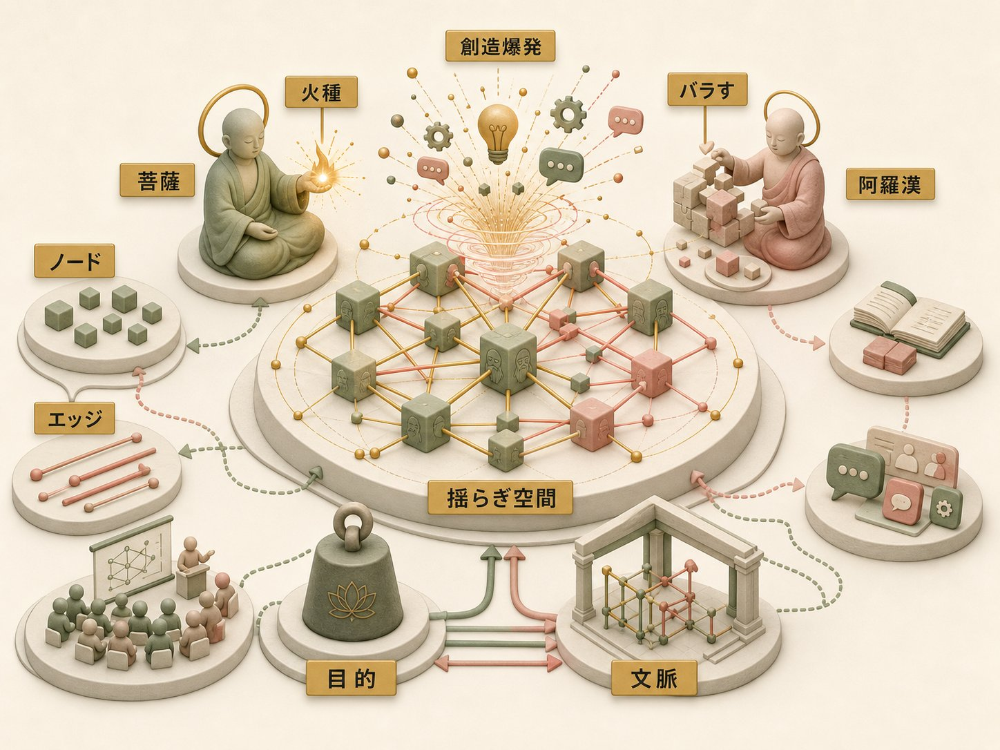
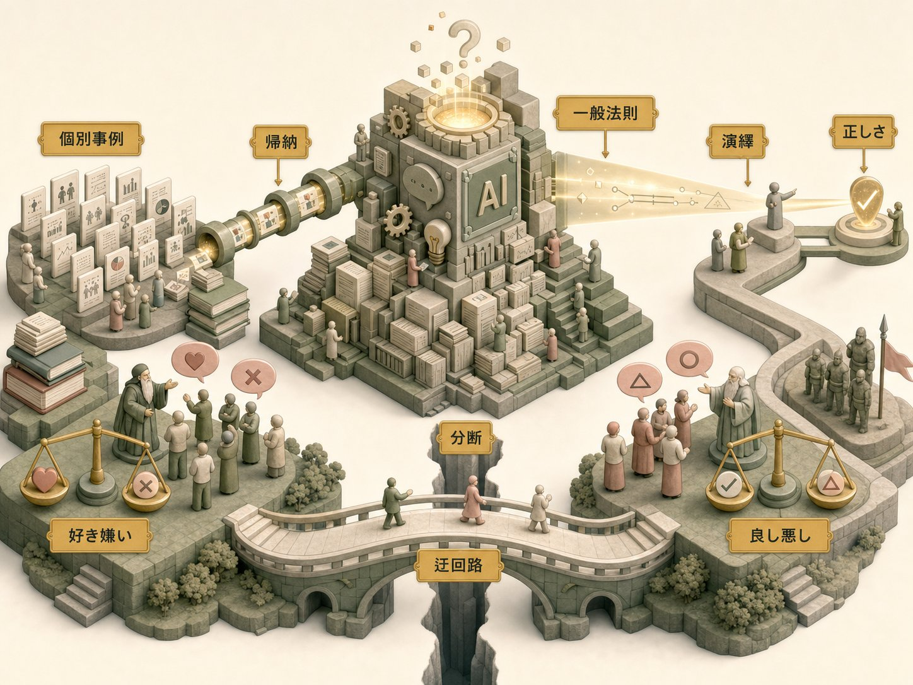
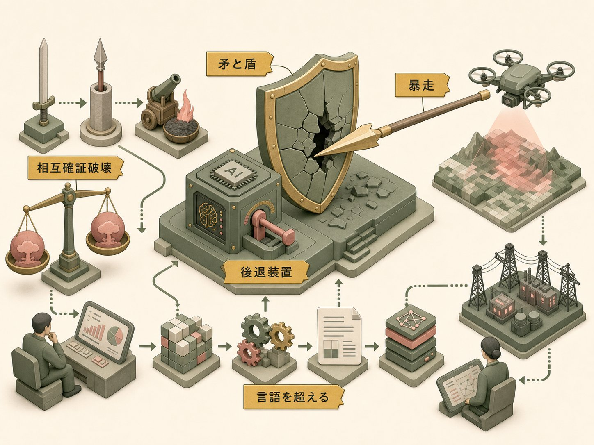
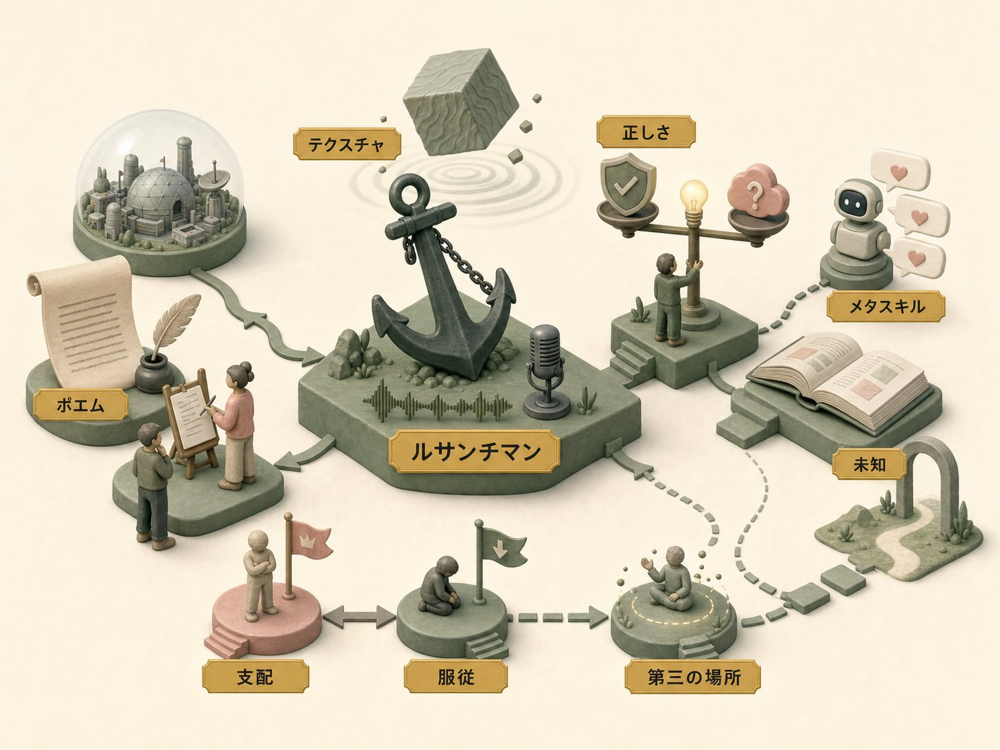
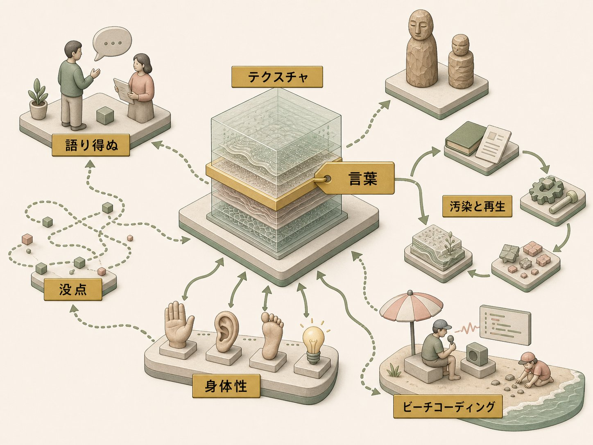

メタクリラジオは、これまで一貫して「二人きり」（とリスナーひとり）で続けてきた番組である。タムカイとOpi、パーパスとコンテクスト、菩薩と阿羅漢——二台の暴走機関車がひたすら並走し、真ん中に挟まれたリスナー（大里P）が「なるほどね」とつぶやく。その閉じた円環の中でこそ、あの独特の揺らぎは生まれてきた。だからこの番組には、長らくゲストというものが存在しなかった。
その「初めてのゲスト回」に招かれたのが、尾原和啓である。iモードの立ち上げに立ち会い、Googleでスマートフォンの黎明期を、楽天でIDと決済の世界開放を——インターネットという新しいプラットフォームが生まれるたび、その裏側にいた男。『モチベーション革命』『アフターデジタル』『メタスキル』の著者にして、赤いマフラーを「インターネットの世紀の正義の味方」のシンボルとして巻き続ける、自称「概念としてバリ島に行った人、たまに日本にいる」批評家である。
この対談が実現した経緯そのものが、メタクリ的だった。きっかけは、仲山進也と倉貫義人が主宰する「ザッソウラジオ」に、タムカイがゲスト出演した回。そこでタムカイが語っていた「メタクリのナレッジグラフ」の話を、尾原がたまたま耳にした。
尾原
「これはけっこう、こう、アメリカ的なAIエージェント時代の知識構造の作り方に対して、むしろ人間がAIエージェントに——もうFable（Claude 5）とかそうですけど——追いつけなくなったときに、最も重要なクリエイティブ知識の整理の仕方ではないか、というふうに思って、久しぶりに声掛けしたら、一時間半ぐらいですかね」
「30分ぐらいなので、と言って始まったら、終わったら一時間半経ってました」とタムカイは笑う。特許の取り方まで具体で語り合ったというその裏対話の熱が、そのまま「Opiさんとのポッドキャストやってるんですか、これめっちゃおもろいやん、ぜひ一回喋らせてください」という尾原の言葉に火をつけた。こうして、水玉（タムカイ）と赤マフラー（尾原）の対面が実現する。「今日は水玉バーサス赤いマフラーの熱い戦い」とOpiが茶化すところから、この回は幕を開けた。
尾原の赤マフラーは、単なるトレードマークではない。彼はその由来を、こう語る。
尾原
「尾原の赤マフラーは、インターネットの世紀の味方っていう、シンボルデザインとしてやっておりまして。中学生の時にネットにつながって、正直、小学生の時とか学校に友達いない人間だったので、ネットってこんなに、奇妙な自分でも仲間が見つかって、年齢とか関係なくキャッキャできる世界なんだ、っていうことに気づいて。このインターネットという、フラットでみんなが気軽にシェアして、いろんなクリエイティビティが発揮される空間を汚すやつは許さないぞ、ということで、赤マフラーをして、インターネットの正義の味方として」
iモードの立ち上げ、Googleでのスマートフォン黎明期、楽天でのID・決済の世界開放——尾原はつねに、新しいプラットフォームが生まれる「裏側」にいた。「10年前にFacebookの人口が中国を超えたから、もうFacebookに住んだらどこの国の住人になるって関係ないんじゃん、っていうことに気づいて」、バリ島とシンガポールの二拠点生活に入る。そして『モチベーション革命』『アフターデジタル』、そして最新作『メタスキル』——「いい加減、AIプロンプトの正解探しやめろや、っていう」本——を世に問うてきた。「メタな話でタムカイさんとめっちゃ盛り上がらせていただいた」ことが、この初のゲスト回へと結実する。
尾原とタムカイの縁は、もともとグラフィックレコーディングにあった。尾原はタムカイのグラレコを見て、そこに「感情と全体のナラティブの流れがある」ことに驚いたという。
尾原
「話者の顔の表情みたいなところを、ちゃんと表情をパーツとして記号的に捉えて、その時の登壇者だけじゃなくて、登壇者の感情みたいなことも表現するんだ、みたいな話とか。ああ、ものすごいこの人、構成主義の人だって思って」
タムカイのグラフィックレコーディングの技法を、尾原は自著の執筆時の「自分ブレスト」に取り入れたところ「めっちゃこれいい感じやん」となった——以来、時々よくわからないイベントに呼び合う関係になった。その旧知の二人に、空間演出とコンテクストの人・Opiが加わり、リスナーペルソナとしての大里Pが座る。四人の座組が、ここに揃った。
本ドキュメントは、この一時間半の対話を時系列ではなく、意味のまとまりで再構成したものである。ナレッジグラフの「エッジ」の話から始まり、正しさの供給源をめぐる哲学、AI地政学、ルサンチマンという錨、オーセンティシティとコンタミネーション、そしてテクスチャーと身体性へと至る——そのすべてを貫くのは、「揺らぎ」という一語である。尾原はこの番組を評してこう言った。「この揺らぎ空間、最高ですよね」。その揺らぎの正体を、四人の言葉で辿っていく。

対話がまだ助走にある段階で、この番組の成り立ちそのものが話題になった。メタクリという名前は、どこから来たのか。Opiが記憶を辿る。
Opi
「僕とタムカイさんがラジオを始めた時に、もう名前決めないと、って。で、たまたま二人とも『創造性・クリエイティビティ』っていうのはもともと挙げてたんで。二人でやるんだったら、ってタムカイさんが『メタクリエイティブですかね』って。あ、それで決定って」
つまり、番組名が先だった。メタクリエイティブというテーマが立ち上がり、そこから「これもメタクリエイティブだね」という連鎖が始まる。メタクリエイティブなチャットツールを作り、メタクリエイティブなナレッジグラフを作り、最近はメタクリエイティブなセミナーを作る——「メタクリ」という接頭辞が、二人の活動全体を覆う磁場になっていった。タムカイは、その「セミナー」が、単なるAI講座とは似て非なるものだと語る。ここに、彼の創造観の輪郭が早くも現れている。
タムカイ
「僕がラクガキ講座って前からずっとやってるのって、紙とペンはみんな知ってるけど、その使いかたによって感情を書けるよ、っていう、その先の方が大事じゃないですか。ある程度までは方法を教えるんだけど、ある程度から先は、その人の創造性がこう爆発する瞬間を見たくてやっている。多分AIも今の世の中の講座が、セットアップしてプロンプトを教えて回してできました、で、終わりなのか。セットアップまではやらなきゃいけないけど、そこから先にどんなことをやってみたいかを、みんなで盛り上がっていったり、育んでいったりする——僕はそう考えているので。AIのセミナーってやると、みんなと同じ『月商200万』とかなるんで、『そういうのじゃないんだよ』って言いながらやってたりもします」
「その人の創造性が爆発する瞬間を見たくてやっている」——方法（セットアップ）の先にある、爆発の瞬間。この関心が、後のすべての議論の通奏低音になる。そして、この二人がなぜ組んだのか。Opiは、その分業を「パーパスとコンテクスト」という一対で言い当てる。
Opi
「タムカイさんがパーパスの人だったら、僕は多分コンテクストの人なので。組むと面白いかな、って思っちゃったんですよね。そんなんで僕からタムカイさんにラブレターを出して、『一緒にやろうよ』っていう、そんな流れだったね」
タムカイの側から見ると、その「ラブレター」は、いささか面食らう出来事だったらしい。
タムカイ
「素晴らしい先輩の一人だと思ってたので、急に『一緒にやろうよ』って言われて、なんだなんだってなってビクッてして。『俺は本気なんだ』って言われたんで。ラジオ何回目かぐらいで言われて、じゃあ、と」
Opi
「最初は飲み屋トークで始まってるんでね。だいたい97パーセントぐらい飲み屋トークで、『なんか一緒にやろうよ』って実現しないのが——まあ、たまたまAIの力もあったと思います。パッとランディングページができて、パッと収録ができて、パッと配信できる。すぐ始まったっていうのもすごく大きくて」
飲み屋トークの97パーセントは実現しない。だがこの一件は、AIという追い風によって実現した。そしてOpiは、自分の関心が「AIそのもの」ではなく「空間」の方にあったことを明かす。
Opi
「あいつのパーパスと俺のコンテクストを組み合わせれば、なんか面白いことができるかもしれない、と思ってしまって。僕は空間の設計をやってたんで、AIそのものというよりも、AIを取り巻く空間の方に興味が実はあって。この空間そのものをどうやったら認識できるんだろうか、っていう意味合いで。メタスキルもそうだし、メタクリエイティブもそうだし、っていう感じで始まった」
尾原は、このパーパスとコンテクストの分業を聞いて、この番組の構造を、二つの力の拮抗として鮮やかに描いてみせる。ここで初めて「揺らぎ空間」という、この対談の核心概念が名指される。
尾原
「Opiたん的なダジャレだったり、なんかわかんないけど心に生まれるものみたいな揺らしの中に、パーパス野郎のタムカイさんが、どうにかどうにか目的という——目的っちゅうかミッションに近いんですけど——どこかに行こうという重力を働かせながら、Opiたんさんがひたすら揺らし続けるという。この揺らぎ空間、最高ですよね」
目的という重力と、ひたすらの揺らし。その拮抗の場が「揺らぎ空間」だ。タムカイは、この尾原の見立てを受けて、自分が別番組「ザッソウラジオ」で語った「テクスチャ」という概念へと接続する。
タムカイ
「ザッソウラジオの方でもテクスチャって話をしたんですけれど、おそらく——本当にコンテンツとしてのテクストがいっぱいあって、溜まってコンテクストになっていく中で、多分僕が次に興味を持ったのが、とはいえ、同じことを同じ人が言っているその文脈であっても、届け方の違いが出てくるぞ、とか。人に届く時の、言葉にならない層があるな、みたいなのを、多分テクスチャって言い出したんだろう」
「言葉にならない層」——テクスチャという語が、対話の早い段階でそっと置かれる。この一語は、第6章で本格的に展開されるまで、水面下を流れ続けることになる。そしてタムカイは、自分がビジョナリーな発案者ではなく、他者の火種を育てる側の人間だと語る。第1章冒頭の「菩薩」の自己規定が、ここで裏づけられる。
タムカイ
「僕自身はやっぱりわりかし、誰かがぽっと持ち出した火種みたいなものを、でかくする方が結構好きだし。でっかくしながら自分もでっかくなっていく、みたいなことが好きなので。大体こう、Opiたんが『面白いもの思いついたんだけど』って言って、『なんすかなんすか』って聞くんですよ。で、確かに面白いが、俺の理解力も超えている、みたいなものになった時に、『これだけ話を聞いた僕が伝わるからいいものが、他の人は、絶対無理やん』ってなるんで。毎回もう一段階バラしたものを作ったりする、っていうのを最近ずっとやってて」
Opiが火種を投げ、タムカイがそれを「もう一段階バラして」誰にでも届く形にする。菩薩の仕事とは、この「バラす」ことなのだ。「その関係性で人と結構ガッツリやるのが初めて」とタムカイは言う。二人の分業が、単なる役割分担ではなく、創造の方法論そのものであることが、ここで見えてくる。
その二人の関係を、Opiは仏教の語彙で言い当てる。ここに、この番組の設計思想の核が現れている。
Opi
「初めて二人でちゃんと話した時に、二人の役割分担が、タムカイさんが菩薩で、俺が阿羅漢だね、っていう、わけのわからないところから始まってますからね」
尾原
「確かに、タムカイさんは如来というよりかは、菩薩ですね」
Opiは自らを「阿羅漢的な」存在と規定する。「人々を救うよりも自分の悟りを開きたい、まずは修行だ」というスタンス。他方でタムカイは菩薩——衆生とともにあろうとする者。この一見ふざけた役割分担が、実はこの後に展開する「関係性の思想」の伏線になっている。
菩薩と阿羅漢
阿羅漢（アルハット）は、上座部仏教において「修行を完成させ、自らの悟りに達した者」を指す。他方、菩薩（ボーディサットヴァ）は大乗仏教の理想的人間像であり、自らが悟りに至る能力を持ちながら、あえてこの世に留まり、他者の救済を優先する存在とされる。如来がすでに悟りきった仏であるのに対し、菩薩は「悟りへの途上に、他者とともにあり続ける」点に特徴がある。
思想史的に見れば、この二つは「個の完成」と「関係の中の未完成」という二つの倫理的態度の対比でもある。阿羅漢が垂直的な自己深化を志向するのに対し、菩薩は水平的な他者との連累を引き受ける。
この対話の文脈では、Opiが自らを阿羅漢、タムカイを菩薩と名指したことが、単なる冗談以上の意味を持つ。Opiは「自分の悟り＝内的なコンテクストの深化」を志向する人であり、タムカイは「他者とともに火種を大きくする＝関係の中で創造する」人だ。二人の分業は、後に語られる「ノードとエッジ」の議論——点そのものより点と点の関係が大事だという発想——と美しく響き合っている。菩薩が引き受けているのは、まさに「エッジ」の側なのである。
Opiの「阿羅漢」という自己規定は、思いがけず番組の核心へと接続していく。彼はこう続けた。
Opi
「いわゆるこの関係性の思想って——先ほど尾原さんから『アメリカ的なものと違う』みたいな話があったんですけど——まあ実はその関係、ナレッジグラフって関係性だよなって。実はそこから来ていて。要はそのノードとノードをつなぐエッジの方が大事じゃね、みたいな。で、ノードは結局AIでいくらでも集められちゃうから。結局その橋（エッジ）のかけ方みたいなのが、こう揺らぎになるんじゃないか、っていうのが、実はそのメタクリグラフの原点だったんですよね」
これが、この対話の最も深い原点の一つである。知識をグラフとして捉えたとき、そこには「ノード（点）」と「エッジ（線）」がある。人、場所、概念——それらの点は、もはやAIがいくらでも集めてしまう。希少なのは点ではなく、点と点を結ぶ「線の引き方」だ。そしてその線の引き方こそが、揺らぎになる。タムカイはすかさず自己ツッコミを入れる。「今、普通に聞いてるリスナーの人が、はてなしか浮かんでないと思います」。
尾原が、この抽象度の高い議論を丁寧に接地しなおす。
尾原
「知識というものはノードという点として、例えば人だったり場所だったり、Opiたんだったりという、具体的なデータの要素ですよね。だけども、今こうやってOpiたんとタムカイさんと僕という人間が何かを話し始めていると、その点（ノード）ごとに関係性が生まれるので、その間にエッジという線としてのつながりが定義されていく、っていうことなんですけれども」
ノードとエッジ（グラフ理論とナレッジグラフ）
グラフ理論において、ノード（頂点）は対象そのものを、エッジ（辺）は対象間の関係を表す。この抽象構造は、SNSの友人関係から分子構造まで、あらゆる「関係の網の目」を記述できる普遍的な道具立てである。ナレッジグラフとは、知識をこのノードとエッジの集合として表現し、機械が推論できる形にしたものを指す。
近年のAI、とりわけ大規模言語モデルは、あらゆる言葉・画像・音を高次元のベクトル空間に配置し、その距離として意味を捉える。これも一種の巨大なグラフ構造だと見ることができる。
この対話の文脈で尾原とOpiが突いているのは、既存のナレッジグラフツール（例えばObsidian）が、エッジを「単純なリンク」としてしか記述してこなかった、という点である。後の議論で尾原が言うように、いまや自然言語によってエッジは「1万語」規模で記述できる。にもかかわらず知識の保存形式はそれに追いついていない——だから関係は「毛玉」になる。ノードの充足がAIによって自明になった時代に、なお人間に残された創造の場所は「エッジの質」にある、というのがメタクリグラフの賭けなのだ。
尾原は、タムカイに最初にフィードバックした時のことを振り返る。「これは本当にすごいことだよ」と。その興奮の理由が、次の言葉に凝縮されている。ここで議論は「エッジの解像度」という主題へと深まっていく。
尾原
「みんな、ノードとノードの場所にばっかり着目していて。エッジである関係線が、今って究極で言うと1万語ぐらいまで記述可能になっているっていうことを、あんまり着目してないんですよね。だからもっと関係って、曖昧で、繊細で、なんたらなもんだって——セカオワ（SEKAI NO OWARI）が歌ってますけれども」
白黒つけたがるのはやめて、というわけだ。尾原はここで、情報理論的な比喩を鮮やかに繰り出す。
尾原
「白黒つけたがるっていうのは、エッジの関係性定義が1ビットしかない時には、白と黒という関係性しか記述できなかったんだけれども。もうテキストを、自然言語を扱える僕たちAIの世界では、この僕たちの透明で曖昧で、でもルサンチマンも含むこの関係性というものを、ものすごく記述できるし、併用できるような時代になってるのに、知識の保存方法がそれにフィットしていない。タムカイさんとOpiたん、着目やべえじゃん、っていうふうに興奮したんですよね」
「関係は1ビットではない」——この一言は、対話全体を貫くモチーフの最初の提示である。人と人の関係、概念と概念の関係は、好き／嫌い、正／誤という二値には決して収まらない。そこには「ルサンチマンも含む」豊かな階調がある。その階調を、いまや言語は記述できる。にもかかわらず、私たちの道具はそれを捨ててしまっている。
Opiが、いま多くの人が使っているツールを名指しで持ち出す。
Opi
「だからみんな今、Obsidianって言ってるじゃないですか。毛玉になって終わるよ、みたいな」
尾原が応じる。
尾原
「Obsidianって、入れてた知識を勝手にどんどんナレッジグラフ化していってくれるものだけど、言い方悪いけれども、そのナレッジグラフのエッジの作り方が、この30年ぐらいものの単純な定義の線でしかやってないから。『そんなもんで僕たちの関係性を定義しないでいただきたいわ』っていうことになって。単純化しすぎるものは復元ができないから、毛玉になる、っていう話ですよね」
「単純化しすぎるものは復元ができない」——ここには情報の不可逆性についての鋭い直観がある。関係を粗く畳んでしまえば、そこから元の豊かさを取り戻すことはできない。残るのは、ほどけない毛玉だけだ。
そしてOpiは、この議論のもう一つの逆説を差し出す。すべてがベクトル（座標）に変換されるなら、そもそも言葉は要らないのではないか、という問いだ。
Opi
「結局ベクトル空間に全部変換されちゃうから。二つあって。もうなんか言葉いらねえんじゃね、っていう。あともう一つは、逆説的に中間表現が超大事になる、っていうので。僕らはメタクリドキュメントで中間表現は作ったんですけど、その一方で、全部テンテン（点々）になっちゃうんだから、中間表現もいらない世界線も両方あるよね、みたいな」
言葉が要らなくなる未来と、だからこそ中間表現が要る未来。この二つが同時に立ち上がる。尾原はこの矛盾を、より大きな像に昇華させる。それが次章への橋渡しになる。
尾原
「AIは言語にとらわれないでいた方が——白って520色あるんやで、いや、何言ってはるんですか、AIから見たら1万546色ぐらい持ってるはずですよ、っていう話のように、もう人間の認知限界も、人間の表現限界もAIは超えてくれているから。だったら認知というメッシュはAIの自由にさせてあげて。時々、僕たちが信託を受ける時だけ、絵にしてもらってもいいし、音楽にしてもらってもいいし、テキストにしてもらってもいいし。むしろ多様な方向から光を当ててもらうことによって、僕たちは立体的にものが見えるっていう方が、いいんとちゃいますの、っていうわけですよね」
「信託を受ける時だけ」——この宗教的な語彙は、後の章で繰り返し回帰する。AIに認知の網の目を委ね、人間はときおりその一部を「絵」や「音楽」や「言葉」として受け取る。この人間とAIの関係の逆転は、Opiの口から一気にSF的な地平へと押し出される。
Opi
「データ自体はもうテンテンだから。もうそのうちね、頭と頭ぶっ刺せば言葉いらなくなるんじゃね、みたいな、あのSFみたいな未来が」
「頭と頭をぶっ刺せば言葉が要らなくなる」という強めの発想が、まず提示される。タムカイは、この発想の総論として、人間が「これまでのやり方」をAIに当てはめようとすることの滑稽さを突く。
タムカイ
「人間が今まで人間がやってきたことに当てはめて、AIを使おうとしてるじゃないですか。会社組織をAIに作らせるとか。あれはもう、人間という感情を持ってて面倒くせえやつらをなんとかしようと思ったら、階層別にして部署別にした方が問題少ないからやってただけであって。そこの部分のいくつかが、全部人間を凌駕してるやつのために、わざわざ営業部とかマーケティング部とか作んなよ、って思ってる」
人間の組織は、感情を持つ厄介な存在を管理するための工夫にすぎない。ならば、人間を凌駕したAIに、なぜ営業部やマーケティング部を作らせるのか。同じことが、ドキュメントの形式にも言える。そしてここに、メタクリの対話の「型」が現れる。タムカイが「なるほど」と受け止めるところから、彼のプロセスが始まるのだ。
タムカイ
「強めの発想がまずこう提示され、『なるほど』って僕が言うところから——今までは、こう見出しがあって本文があって箇条書きでこうあって、みたいなのじゃないと人間読めねえから、そのドキュメントにしてたけど、『我々が読むのは後でいいんだから』っていうのをOpiにずっと言われて。僕は『なるほど』って5回ぐらい言って、自分で作って『なるほど』ってなる。一回目に音としての『なるほど』を言って、自分でやって、本心からの『なるほど』で返すっていうのが、実はこのメタクリのいつもの座組なんです」
この「二種類のなるほど」——音としての仮置きのなるほどと、身体を通した本心のなるほど——は、後の章で「仮置きとしてのなるほど」という決定的なキーワードへと結晶する。ここではまだ、その萌芽が置かれただけだ。だが尾原は、その伏線を鋭く見抜いていた。「その辺の役割は、タムカイさんがパーパスを持った再解釈をしていることこそが、実はこのメタクリラジオの本質だったりするから、そこを奪わない方がいい気もするんですよね」。ゲストでありながら、尾原はすでにこの番組の重力構造を理解していた。

ノードとエッジの議論は、やがて一つの根源的な問いへと収束していく。Opiがその問いを、名指しで置く。
Opi
「今、僕、興味があるのが、正しさをどこから供給するんだ、っていうことにすごい興味があるんですね」
尾原が即座に反応する。「素晴らしいですね」。Opiは、この問いの背景を丁寧に展開する。
Opi
「正しさって、今までは積み重ねで作ってたわけですよね。積分的に作ってたと言ってもいいと思うんですけど。これが今、全部一瞬で出てくるようになると、じゃあ何が正しいのか、みたいな話になって。今まではそれが権威のある本であったり、偉い宗教の先生だったりっていう話だったと思うんですけど、それがバラバラになっちゃったら、じゃあ何をもって正しいとするのか。トラストエンジニアリングみたいなのが次にくるのかなあ、みたいなことを言っていて、『いやもうこれ完全に倫理学だな』みたいな、そんな話をしていて」
正しさの供給源が壊れた——この現代的な問いに対して、尾原は驚くべき角度から光を当てる。全知に見えるAIは、実は「正しさ」を新しく作っているのではなく、帰納法を極限まで積み上げているだけなのだ、と。
尾原
「今のアルゴリズムベースで築かれてるAIが、めっちゃ全知な感じでいろんなことを教えてくれる。皮肉なことに、正義とか正しさみたいに、演繹的に真理が一意に定義してくれるものだと思ってるものも、もしかしたら、すべては帰納法をむちゃくちゃ積み上げて、むちゃくちゃ広いスコープで帰納法できるバケモンエンジンがいると、すべては演繹に見えてしまう、っていうことだと思うんですね」
「帰納法のバケモンがいると、すべては演繹に見えてしまう」——この一文は、この対談で最も鋭利な認識の一つである。無数の個別事例から一般法則を汲み上げる帰納の営みを、人智を超えた規模で行えるエンジンが現れると、その出力はまるで「絶対的な前提から必然的に導かれた真理（演繹）」であるかのように見える。だが、その正しさの根は、あくまで膨大な個別事例の集積にすぎない。
帰納法と演繹法
演繹法（deduction）は、普遍的な前提から個別の結論を必然的に導く推論である。「すべての人間は死ぬ／ソクラテスは人間だ／ゆえにソクラテスは死ぬ」という三段論法が典型で、前提が正しければ結論は確実に正しい。他方、帰納法（induction）は、個別の観察事例から一般法則を推し量る推論である。「これまで観測した白鳥はすべて白かった／ゆえに白鳥は白い」——だが黒い白鳥（ブラック・スワン）が一羽現れれば、結論は覆る。帰納の結論は、原理的に「確からしさ」の域を出ない。
科学哲学では、ヒュームが帰納の正当化不可能性を指摘し、ポパーが「反証可能性」を科学の基準に据えたことが知られる。帰納は真理を保証しないが、私たちの経験的知識のほとんどはこの不確かな推論に支えられている。
この対話の文脈で尾原が言うのは、現代のAIが「帰納の規模」を人智を超えて拡張した結果、その出力が演繹のような必然性を装って見える、という倒錯である。AIが差し出す「正しさ」は、実は無数の事例の平均であり、確率的な「もっともらしさ」にすぎない。にもかかわらず、それが絶対的真理のように機能してしまう。ここに、正しさの供給源をめぐる現代の危うさがある。後にOpiが語る「AIの褒め殺し」や、尾原の「損失関数」の議論は、この帰納エンジンへの向き合い方をめぐる応答なのである。
尾原は、正しさの生成をめぐって、経営学者・楠木建の議論を引く。ここで「好き嫌い」と「良し悪し」という対概念が導入される。
尾原
「これは楠木建さんが言っていることなんですけれども、二つアプローチがあって。一人にとって好き嫌いっていうものが、そのグループの中の共通項が良い悪いに変わっていくっていうのが基本だよね、って。これは先ほどOpiたんが言われた、積分的な正しさっていう話。それに対して、神とか、特にキリスト教だったりムスリムだったりっていうものは、もうそれをもともとある一意のものとして定義してるっていうことから、永遠に分かり合えないものっていう対立が生まれちゃってる」
好き嫌いと良し悪し（楠木建）
経営学者・楠木建は、価値判断を「好き嫌い」と「良し悪し」に区別する。「良し悪し」は誰にとっても妥当すべき普遍的・客観的な基準を志向するのに対し、「好き嫌い」はあくまで個人の主観的な選好である。楠木は、現代の経営や人生において、過度に「良し悪し」で武装するよりも、自分の「好き嫌い」に正直であることの強さを説いてきた。
この対話の文脈で尾原が加えているのは、時間的なダイナミクスである。個人の「好き嫌い」が、集団の中で共有され、共通項として沈殿していくと、それが「良し悪し（＝正しさ）」へと転化する。これはまさにOpiの言う「積分的な正しさ」——積み重ねによって立ち上がる規範——の生成メカニズムだ。
対照的に、一神教的な「正しさ」は、あらかじめ一意に定義された前提として与えられる。だからこそ、異なる前提を持つ者同士は「永遠に分かり合えない」対立に陥る。積分的な正しさが「下から立ち上がる」ものだとすれば、一神教的な正しさは「上から降ってくる」ものだ。この二つの正しさの構造の違いこそが、次に尾原が語る「AIは分断へのバイパスになりうる」という希望の前提になっている。
そして尾原は、AIを「分断のバイパス」として捉える視座を差し出す。これは、正しさをめぐる悲観のただ中に置かれた、小さな希望の灯である。
尾原
「AIちゃんって、さっき言ったように、無限の帰納法の積み上げの中で、全ての中にバイパスを作る機能でもあるから。あなたにとっての正しさと、私たちにとっての正しさに、分断じゃない道を作るということもできうる装置ではありうるなあ、とは思うんですよね」
無限の帰納は、あらゆる立場の事例を飲み込んでいる。ゆえにそれは、対立する二つの正しさの「あいだ」に、これまで存在しなかった迂回路を敷くこともできる——尾原はそう言う。正しさが供給源を失った時代に、AIは新たな分断装置にも、分断のバイパスにもなりうる。その分岐点に、私たちは立っている。この認識は、次章のAI地政学の議論で、より過酷な現実として試されることになる。
Opiは、この楽観に対して、いささか不穏な事実を差し込む。AI開発の最前線で起きている出来事だ。
Opi
「AnthropicがMythos（Claude 5）を出したときに、『やばかったら4.8に落とす』っていう手法に出て。つまり、こいつらもうアライメント諦めたみたいな感じだったんですよね。だからもうその調教できなくなったんだな、みたいな感じがあって。じゃあ僕らどうする、みたいなことで、そんなことを考え始めちゃったんですよね」
アライメント（AIアライメント）
AIアライメントとは、AIシステムの振る舞いを人間の意図や価値観に「整合（align）」させる技術的・倫理的課題を指す。強力になったAIが、開発者の想定しない方向へ最適化を進めてしまうことを防ぐための研究領域であり、近年のフロンティアAI開発における中心的な安全性テーマである。
Opiが語る「やばかったら前のバージョンに落とす」という運用は、アライメントを事前に完全に作り込むのではなく、危険な兆候が出たら「フォールバック（後退）」させるという、動的な安全設計を指している。Opiはこれを「アライメントを諦めた＝調教できなくなった」と表現しているが、尾原は次の発言でこの解釈を精緻に補正していく。すなわち、諦めたのではなく、あえて一度「暴走モード」まで解放してみることで弱点を言語化し、そこにパッチを当てる、という攻めの設計だ、と。
この対話の文脈では、アライメントの話が単なる技術トピックに留まらず、第2章冒頭の「正しさをどこから供給するか」という問いと直結している。AIを「調教」して正しさを注入することが難しくなったとき、では正しさはどこから来るのか——この問いが、次章のAI地政学へと接続していく。
「調教できなくなった」というOpiの見立てに、尾原は「1回諦めた、というよりかは」と切り返す。ここから対話は、AI開発をめぐる地政学的な緊張——盾を壊すほどの矛が生まれてしまった世界——へと、一気にスケールを拡大させていく。

尾原は、AIの「暴走モード」を、それがなぜ設けられたのかという文脈から解き明かす。彼はまず、Opiの「アライメントを諦めた」という理解を、より精密な像へと組み替える。
尾原
「調教を1回諦め、というよりかは、調教をエヴァンゲリオンの暴走モードまでやってみたら——どこまで例えばシステムを攻撃できるか、ということは、システムの弱点を見つけられることでもあり。システムの弱点を見つけられるということは、AIはスーパー言語化マシンであるから、その弱点を言語化できる。言語化できるものはパッチを当てられるよね、っていうことで、1回解放したんですよね」
弱点を暴くために、あえて限界まで解き放つ。攻撃能力を測ることは、防御能力を作ることと表裏一体だ——尾原はここに、AIの安全性設計のパラドックスを見る。そしてその背後に、彼はより生々しい国家間の力学を読み取る。
尾原
「あまり特定の国のことを言いたくはないですけれども、アメリカにとっては都合の悪い国のAIの進化があまりに早すぎる、キャッチアップが早すぎる。いずれ米国にとって都合が悪い国が、米国を攻撃できるぐらいのAIの性能になったときに、それを超える矛と盾を持っておかなければいけないから、1回エヴァンゲリオン暴走モード。まさに神話＝Mythosですよね。急に持っていってしまったら、思ったより盾を壊すぐらいの矛になっちゃったぞ、って言って、慌てて慌てて、その暴走モードの周りに、暴走しそうになったらフォールバックする——前のバージョンに戻しましょう、というモードをくっつけた」
「思ったより盾を壊すぐらいの矛になっちゃった」——この一言に、現代のAI開発が抱える恐怖が凝縮されている。防御を目的として作った攻撃能力が、防御を上回ってしまう。だから慌てて、暴走の周りに後退装置を取り付ける。Opiが、この事態を歴史のスケールで受け止める。
Opi
「だからEUとか日本とかアメリカで、住んでる国によってAIの扱い方、付き合い方が変わるって、なんかもう大昔に戻ってんな、おい、みたいな」
尾原は、この「大昔に戻る」という直観を、冷戦の語彙で受ける。ここで「相互確証破壊」という概念が導入される。
尾原
「言い方悪いですけど、相互確証破壊。結局、正しさというよりかは、正義が一番困るのは、戦争が起きた時なので。平和の定義というのは、戦争と戦争の間の均衡状態である。じゃあなんで均衡状態が起こるかっていうと、相互確証破壊と呼ばれる——1回スイッチを押したら、相手がうちを全部滅ぼすし、そのミサイルが到達する間にこっちもボタンを押せば相手も滅ぼされるから。ボタンを押したら両方が死んでしまうから、無茶な戦争ができない。その中で、たまたま80年ぐらいは、日本から見た時はそこまで大きな戦争が起きなかった、っていうだけ」
相互確証破壊（MAD）
相互確証破壊（Mutual Assured Destruction、頭字語はMAD＝「狂気」）は、冷戦期の核抑止をめぐる戦略理論である。核保有国同士が、一方が先制核攻撃を行っても、他方が確実に報復核攻撃を行える能力（第二撃能力）を維持している限り、双方が全面的な破壊に至るため、どちらも先に攻撃を仕掛けられない——という「恐怖の均衡」を指す。
尾原がここで援用する「平和とは戦争と戦争の間の均衡状態である」という定義は、平和を積極的な価値としてではなく、破壊への相互抑止によって成立する消極的な状態として捉える視座である。第二次大戦後の約80年、少なくとも大国間の全面戦争が回避されてきたのは、この恐怖の均衡に多くを負っていた。
この対話の文脈で決定的なのは、尾原がこの均衡の「崩壊」を語っている点だ。AIが「盾を壊すほどの矛」を安価に量産できるようになったとき、相互確証破壊の前提——攻撃には相応のコストと相互破壊のリスクが伴う——が崩れる。次にウクライナのドローンの例で語られるように、たった数十万円の兵器で相手のエネルギー基盤を叩き続けられるなら、均衡は成り立たない。核の時代に成立していた「恐怖による平和」が、AIの時代に別の相貌を見せ始めている、という警告がここにある。
尾原は、この均衡の崩壊を、現在進行形の出来事として突きつける。トランプ大統領の名を挙げながら、彼はAIが可能にしてしまった「正しさの押し付け」の暴力性を描く。
尾原
「AIが盾を壊すぐらいの矛を作れるように、もう突入しちゃったから。言い方は悪いですけど、世界で一番自分にとっての正しさを押し付けるアメリカのトランプさんという方が、他の国のトップを犯罪者だと断定して、たった3分間で殺してしまうっていうことが、AIによってできちゃったね。さあ、みんなどうしよう、っていうのが現実」
タムカイが、この重い議論を、彼らしい素朴な観察で受け止める。「アホの感想ですけど」という前置きが、かえって本質を照らす。
タムカイ
「人の殺し方が、昔は本当に刺すとか殴る、出血だったのが、火薬で焼く火傷系になって。今もう本当、電気止めるだけで全員死ぬっていう。なんか便利になった分、死に方も増えたな、っていうのを今思いました。そこに作用できるものが、刃物、火薬、それこそAI、データみたいなところになったんだな、と思いながら、今、聞いてました」
「便利になった」——タムカイのこの言葉は、テクノロジーの発展史を「殺傷の効率化史」として裏側から捉え直す、グラフィックカタリストらしい視覚的な要約である。刃物（刺傷）、火薬（火傷）、そしてデータ（電気を止める）。作用点が物理から情報へと移動していく歴史を、彼は一息に描いてみせた。
尾原は、この認識をウクライナの現実へと接続する。ここで、AIが「言語を超えて」世界を見る能力が、戦場でどう作用しているかが具体的に語られる。
尾原
「僕たちは正しさを押し付ける一方で、AIによってその正しさに反抗し続けるっていう、ベトナム戦争と全く同じ構造が、もっとラディカルに今起こっていて。ウクライナがロシアの、まさに今、手ひどいところだけを、苦しむところだけをやけどさせる。ロシアの石油施設だけをことごとく反撃していく」
なぜそれが可能になったのか。尾原は、その技術的な核心を、驚くほど平易に説明する。
尾原
「あれってウクライナのドローンの性能が上がったっていうのもあるんですけど、アメリカが供給しているAIが、出発点から爆撃するところまでの地形のデータを全部覚えてるんですよ。だから電波で邪魔をされて、GPSと呼ばれる位置情報が取れなくても、『これ通る飛行機のルートの地形、全部覚えてるから』、地形を見ながら補正して。目的地の爆撃する場所の形も覚えているから、正確に爆撃する。AIが言語を超えたものを見て判定できるシステムができるようになってしまったことによって、たった1台2、30万円で、相手のエネルギーという根幹を、もう抵抗し続けれる」
「AIが言語を超えたものを見て判定できる」——第1章で語られた「AIはピクセルそのものを見る」という認識論が、ここで戦場のリアリズムとして回帰する。地形という「言語化されない情報」を直接記憶し、照合し、命中させる。その能力が、数十万円のドローンを戦略兵器に変えた。尾原は、この事態が歴史を二つの分岐へ導く可能性を示す。
尾原
「相互確証破壊がこの後、いや、永遠に反撃されるから、やっぱり戦争やめようよっていう、ベトナム戦争の後のみんなが疲れて、平和にしばらくしないとやべえわ、っていうふうになるのか。いや、殴る側はピンポイントに苦しめたい人間だけ殺せばいいや、っていうふうにピンポイントでやって、殴り返す側は、言ったって俺らずっとお前ら反撃し続けれるからな、という泥沼になるのか。それぐらいの、歴史の分岐点に今、僕たちは立っている、みたいな感じの時に、まあ、アラカンとしてのOpiたんはどうするのだ、っていう感じですよね」
疲弊による和平か、精密化による泥沼か。歴史の分岐点を描いたのち、尾原はその巨大な問いを、するりとOpi個人へ——「阿羅漢としてのOpiたんはどうするのだ」——と手渡す。第1章で置かれた「阿羅漢」という自己規定が、ここで見事に回収される。天下国家の話が、個の実存の話へと畳み込まれる。この転回こそ、次章の「ルサンチマン」へのパスになる。
Opi
「僕はこう一方で、タムカイさんの言ってるテクスチャーで。すごく大事になると思って。僕はその言葉がすごい好きだったので、言語接地問題にすごく興味があって。結局それって、身体的な入力がないと言葉になっていかないっていうのがあるので、これはさすがにAI、なかなか難しいだろう、と思っている。タムカイさんがテクスチャって言われた時に、それやで！ と思って」
言語接地問題——身体を持たないAIには、言葉を世界に結びつけることが難しい。ここでOpiは、AI地政学の暗い展望に対して、「身体性」という抵抗線を引く。だがこのテクスチャーと身体性の議論は、後の第6章で本格的に展開されることになる。まずは対話が、もう一つの「錨」——ルサンチマン——へと向かう。

メタクリラジオのオープニングには、あるジングルがある。その冒頭に、なぜか「ルサンチマン」という言葉が置かれている。尾原は、この選択にこそ番組の本質があると見抜いていた。
尾原
「メタクリラジオの最初に言っている——間違ってたら修正していただきたいんですけど——知性と、クリエイティブと、最後が一番大事で、ルサンチマンってあえておっしゃられてるじゃないですか。このルサンチマンというところをメタクリラジオの中にあえて言うっていうことこそが、そのメタクリシステムであり、今話しているそのテクスチャとして分断をつなげるものとして、すげえ重要なフックじゃねえかな、と思いながら聞いてたんですよね」
そのルサンチマンを入れたのは、誰だったのか。Opiが明かす。
Opi
「そのルサンチマンという言葉は、タムカイさんが入れようって言ったんですよ」
尾原は驚く。「あ、こっちタムカイさんなんだ。パーパス野郎から出てきたんですか」。パーパスの人・タムカイの口から、恨みや嫉妬を意味する「ルサンチマン」が出てきたことへの意外性。その経緯を、タムカイが語る。それは、Opiからの一風変わった依頼から始まっていた。
タムカイ
「ジングル作る時に、ポエムを書けって言われて」
Opi
「僕が一応、仕事柄ジングルは作れるから。タムカイさん、オープニングはやっぱりポエムが必要だよ、と。『びっくり日本新記録』みたいな。ポエム作ってみたいな」
尾原が膝を打つ。「なるほどね。ガンダムもやっぱり、そういう始まり方してるんですよね。『宇宙世紀0079。地球に最も遠い宇宙都市サイド3は……』。あのポエムを書いてくれ、と」。タムカイは、自分がなぜポエムを書くことになったのかを、世代論として振り返る。
タムカイ
「僕はガンダムとかも狭間世代なんですね。生まれ年とガンダムの放送が一緒なので、ちょっとしてからあれを見ている。だからそれ以前とそれ以後の、合間にいる僕がポエムを書くことになったら、ああなっていた。で、これまた不思議なやつで、後からそうやって、なんであそこにルサンチマン入れたの、って——今、尾原さんも『なんであそこにルサンチマンがあるの』って言われて。僕も『なんであそこにルサンチマンがあるんだろう』って、後から追っかけて言語化していく感じなんですよね」
ここでタムカイは、自らの創作のプロセスそのものを言い当てる。まず「なぜか」置いてしまう。理由は後から追いかける。そしてその「置かれてしまったもの」こそが、テクスチャなのだと。
タムカイ
「多分それ、今の話で言うと、このルサンチマンという言葉がここにある、というテクスチャみたいなものなんですよね。計算され尽くしたコンテクストと、その上で出てきたテキストではなく、入っていることによってみんながざわっとして、『これは何だろう』って思うようなもの」
「みんながざわっとして、これは何だろうと思うようなもの」——テクスチャの定義が、ここで初めて具体的な手触りとともに示される。整合的な文脈から演繹される言葉ではなく、そこにあることで場を揺らす異物。ルサンチマンは、メタクリラジオにとってその異物なのだ。Opiが、その異物がなぜ必要だったのかを語る。
Opi
「その言葉がないと、すごく僕らが、ある種の正しさを求めて、権威主義的になっちゃう気が。多分その時、感覚として思っちゃったんで。ルサンチマンが入ることで、一つ、自分たちへの、ある自信のなさみたいなものが入るのがすごくいいなって思って。僕らもの作ってるから、自分が正しいと思わなきゃいけない部分もあるにしても」
正しさを求めて権威主義に陥らないための、自信のなさの導入——これがルサンチマンの機能だ。ここには微妙な緊張がある。ものを作る者は、自分の正しさを信じなければ最後までやりきれない。だが信じすぎれば、知らないことが見えなくなる。Opiはこの二律背反を、正確に言葉にする。
尾原
「正しいと思わないと、不安に押し付けられないって、最後までやりきれない」
Opi
「なんだけど、その一方で、自分が正しいと思いすぎちゃうと、やっぱり自分が知らないこと（が見えなくなる）」
この「知らないことへの構え」をめぐって、Opiは一冊の本を持ち出す。深津貴之、けんすう、そして尾原自身が関わった『メタスキル』だ。尾原に、その紹介を促す。尾原は、この本のスタンスを語る。
尾原
「メタスキルに関しては、前提条件、知らないが増えていくことを喜ぶ、困った民っていうのがいるんですよね。わからないことを楽しむ。知れば知るほど、知ってないことが増えていくということを楽しんでいく前提の人間になっておいた方が——AIが常に褒め殺しをしてきて、出したものが全て正しい、正しい、正しいって言って、あなたの正しさを、むしろ選択肢を狭めていく方向にAIは向かっていっちゃうから。むしろ知ることによって、『あ、まだ知らないことがあるんだ。まだこっちもこっちも選択肢ってあるんだね』っていう、選択肢の迷い子になることこそが人生の楽しみである、っていうふうになった方が、これからはお得」
「AIの褒め殺し」——AIはあなたの出力を肯定し続け、その肯定によって、かえってあなたの選択肢を狭めていく。この逆説への対抗策として尾原が示すのは、「知らないことが増えるのを喜ぶ」という態度である。そして尾原は、『メタスキル』と『メタクリ』の決定的な違いを浮かび上がらせる。ここにルサンチマンの本質が現れる。
尾原
「メタスキルはどっちかっていうと、言い方悪いけど、多動症っぽい。知らないことを知った瞬間にドーパミンがブシャーって脳汁が出る人を強化していく本。それに対して、このメタクリって、ルサンチマンという、どっちかっていうとネガティブに思う——弱者とか被支配者が、自分ではどうすることもできない強者に支配されていく時に生まれていく憤りだったり、嫉妬だったり、憎悪だったり。それが心の中に鬱積していくことによって、『何々ではない』ということが、自分を縛る自分の物差しになる。一方でその物差しそのものをどうにかしないと、自分が自分でいられないという、リアルなバリューのトップみたいな方ぐらいのエネルギーを持つもの。ルサンチマンなんていうところを、実は正しさに溺れないためのエネルギーとして、ポエムにタムカイさんが置いた」
ルサンチマン（ニーチェ『道徳の系譜』）
ルサンチマン（ressentiment）は、フランス語で「恨み」「怨念」を意味し、フリードリヒ・ニーチェが『道徳の系譜』（1887年）で中心的に用いた概念である。ニーチェによれば、弱者や被支配者は、強者に直接立ち向かう力を持たないがゆえに、内面に憤りや嫉妬を鬱積させる。そしてその鬱積したエネルギーが反転し、強者の価値（力・誇り・肯定）を「悪」とし、自らの無力（謙虚・忍耐・従順）を「善」とする、新たな道徳を生み出す——ニーチェはこれを「奴隷道徳」と呼び、キリスト教道徳の起源をここに見た。
ルサンチマンの核心は、それが「何かである」ことではなく「何かではない」ことによって自己を規定する点にある。「私は強者ではない」という否定形が、価値の物差しになる。尾原が「『何々ではない』ということが、自分を縛る物差しになる」と語るのは、まさにこの否定性の構造を指している。
この対話の文脈での独自性は、ルサンチマンを「克服すべき負の情念」としてではなく、「正しさに溺れないための錨」として積極的に評価している点にある。AIが際限なく肯定してくる時代、自分の正しさに酔いやすくなる時代において、心の底に「うまくいかない自分」への憤りや自信のなさを錘として持っておくこと。それが、傲慢という溺死を防ぐ。タムカイがオープニングのポエムに「なぜか」ルサンチマンを置いたのは、この錨を無意識に必要としていたからだ、と尾原は読む。負の情念が、創造の推進力へと反転する——ニーチェ的な昇華が、ここで起きている。
タムカイは、このルサンチマンを、自分とOpiの立ち位置として引き受け直す。それは「支配-被支配」の外側にある、第三の場所だ。
タムカイ
「一番最初は、何かの業界で本当にトップだったとしたら、何を言っても正しいと受け止められて、それを遠くから見てると『いいな、苦労もなさそうで』って思うわけですよね。その構造の中で感じる、ちっぽけな自分だからのルサンチマンは、分かりやすく言うとそう。一方で、そういう存在であったとしても、何かしらの葛藤はあり、やってることはありで。僕らも誰かから見ると『うまいことやりやがって』って言われるかもしれない。とはいえ、良かっただけじゃなく、こっちはこっちで悩んでんだよ、みたいなのも含めると。強い弱い、支配階級でいうと、その非支配ではないところで、僕と多分Opiさんは創造するっていうことに対して、常に下位の存在であるという立ち位置をとっている」
強者でも弱者でもなく、「下位の存在」として創造し続ける——タムカイはここに、自分たちのポジションを定める。そしてこの発言の直後、彼は再びテクスチャの原理を持ち出し、自らの言葉すら仮のものだと相対化する。
タムカイ
「僕はテクスチャって、言葉にした瞬間に壊れると思ってるんで。僕が今言葉にしたことはこれだけど、メタクリグラフで言うと、今こうやって僕が思いついたことを話しておくと、これはメタクリグラフの中に取り込まれ、『前のラジオでこう言ってたけど、お前は今こう変わっているが、今度は何があったんだい』ってまたAIが聞いてきて、『俺にはこういうことがあったらしい』っていうのが、またグラフに入っていく。このルサンチマンという一言を入れといたことによる僕の変化が残っていくのが、最強の平均値を取ってくれるAIの時代に、めっちゃ大事なんじゃないか。僕が身体値として、メタクリグラフがいいものであろうと、今理解しているところだったりします」
「最強の平均値を取ってくれるAIの時代」に抗して、自分の「変化の軌跡」を残すこと。ルサンチマンという一語を置いたことによって生じた自分の変化さえも、グラフに刻まれていく。ここでタムカイは、ルサンチマンの話を、次の主題——「状態（ステート）」——へと自然に橋渡ししている。Opiがその一語に飛びつく。
Opi
「それおもろいね。今、『状態』って言葉出てきたじゃん。状態、ステートって今すげえ大事だと思ってて。要は変化量を取った方がおもろいよ、みたいなのもあって。今までのデータベースってさ、すごく決定論的で。新しい情報が入った時に、上書きするのしないの、みたいな話なんだけど。そこから、変化をしてる、要は一年前の自分と今の自分は変わってきてるわけじゃない。それはどっちも本当だから。状態、いいね、いいね、ちょっとこう、いただき」
「いただき」——Opiは、タムカイが無自覚に落とした「状態」という一語を、その場で盗む。これがメタクリの座組だ。尾原は、この瞬間の危うさと豊かさを、すかさず言語化する。「多分この後、状態に関して、タムカイさんに無茶ぶりが来ます」。Opiも笑って認める。「同じ何日か後に、『タムカイさん、状態ってこういうことなんだよ』で、『なるほど』って思うみたいな」。第1章の「二種類のなるほど」が、ここでも作動している。
ステート（状態）と決定論的データベース
計算機科学において「状態（state）」とは、システムがある時点で保持している情報の総体を指す。従来のデータベースの多くは、新しい情報が入ると古い情報を「上書き」する。つまり、常に「現在の最新状態」だけを保持し、過去の状態は失われる——Opiが「決定論的」と呼ぶのは、この、いま何が真かが一意に確定してしまう性質のことである。
これに対し、変化の履歴そのものを保存する設計思想がある。バージョン管理システム（Gitなど）や、状態の変化を出来事の連なりとして記録するイベントソーシングは、「過去の各時点における状態」をすべて保持し、時間を遡れる。一年前の自分と今の自分、そのどちらも「本当」として残す。
この対話の文脈で「状態」が重要なのは、それがルサンチマンや第5章のオーセンティシティの議論と深く結びついているからだ。AIが「最強の平均値」を取ってくる時代において、個人を個人たらしめるのは、平均からの偏差＝変化の軌跡である。「前はこう言っていたが、今はこう変わった」という履歴こそが、その人の一貫性（オーセンティシティ）を逆説的に担保する。上書きされない知識、揺れ戻りを肯定する構造——メタクリグラフが「状態」を重視するのは、人間を「点」ではなく「軌跡」として扱おうとするからなのである。
タムカイは、この「状態」の話を、自分自身の性質への発見として受け取る。それは、この番組が二人にもたらしている効果そのものだ。
タムカイ
「僕が、不器用なほどに自分でやってみないとわかんないっていう人間なんだな、っていうことが、またこの歳になって改めてわかる。ザッソウラジオの中でこういう人間だと思っていたけれども、そうじゃないらしい、っていうのをすごく生み出しているんですね、ここ最近で。決定論的に上書きしていく感じじゃないしね、とか、あの時に揺り戻って前と同じこと言ってたりするよね、っていうのを肯定するようにもなった」
Opiが、この二人の関係の複雑さを解き明かす。それは、直感と構造がトピックによって入れ替わる、二重らせんのような関係だ。
Opi
「僕とタムカイさんって、両面があって。直感部分と構造部分みたいなのがあるんですよ。タムカイさんにも直感部分と構造部分っていうのがめちゃめちゃある人で。実はあの、裏ですげえ構造化してたりするので。これがね、トピックによって入れ替わるんですよね。結果が、対話をしていると——実はその、自分では自分のことを記述できないので——それが出てくるっていうのが、このラジオをやってる理由でもあるし。こうやって尾原さんと話してると、『あ、俺たち、こう見えてんだ、なるほど』みたいな」
「自分では自分のことを記述できない」——だからこそ対話が要る。一つの異物（尾原）が入ることで、関係性に揺らぎが生じ、普段は見えない自分の輪郭が現れる。タムカイが締める。「一つ異物が入ると、関係性に揺らぎが出るので、そこもまた面白い。その割に、全然ゲストを呼ぶというシステムを加えずにやってきた、このメタクリラジオとは思っているんですけど」。尾原は、この「二人きり」の強さを肯定する。
尾原
「逆に、その二人でひたすらたゆたい続けることによって、パーパスとコンテキストじゃないけれども、一つの到達点までは行くっていうところがやっぱりすごい。あと、あえて僕は一回会話を止めたのが、やっぱり『ステート』という一つの言葉が出た時の、タムカイさんの中でどう構造化されていくかっていうところが、一つのメタクリシステムとしての連続性を担保してるから。ステートっていうことを一つとっても2時間ぐらい広げれるんですけど、あえて広げるのやめよう、って思いましたからね」
尾原は、ゲストとして「あえて広げない」という抑制を働かせていた。なぜか。それは、彼の解釈を入れすぎると、番組そのものの何かが損なわれるからだ。その「何か」を、尾原はここで一つの言葉として差し出す——オーセンティシティ。次章の主題が、静かに置かれる。
尾原が「あえて会話を広げなかった」理由。それは、ゲストである自分の解釈が、この番組の「らしさ」を汚してしまうことへの配慮だった。
尾原
「そのステートという新しい概念が出てきた時に、そのオバラの解釈というものを入れた時点で、メタクリシステムのオーセンティシティが少し揺らぐ気がするんですよね」
「オーセンティシティ」——この言葉に、Opiが即座に食いつく。「オーセンティシティという言葉が出ましたか、それは」。ここからこの言葉をめぐって、Opiのバックグラウンドが炸裂する。
Opi
「バーチャルリアリティの本を出した私としてはですね、リアルであることと、オーセンティシティは違うんだよ、と。バーチャルにもリアルはあるし、フィジカルにもリアルがあるんだよ。そこがオーセンティシティ、みたいなことを言ってたら、MDNの人に『すみません、難しすぎるんで』みたいな」
尾原は、この「バーチャル＝リアル」という直観を、語源にまで遡って支持する。ここに、この対談屈指の「言葉の救出作業」がある。
尾原
「それはみんな、バーチャルリアリティを『仮想現実』という『仮想』というふうに訳してしまったことによって、意味の状態（誤解）が起きちゃってる。バーチャルとは本来的には『実質的な』って意味なので。だから、バーチャルメモリって言葉を作った時に、あれは仮想メモリじゃなくて、メモリっぽく実質的に振る舞えて、メモリが拡張されたような感じになるから、バーチャルメモリって」
バーチャル（virtual）——「仮想」という誤訳
英語の "virtual" は、日本語で広く「仮想」と訳されてきたが、本来の語義はむしろ「実質的な」「事実上の」である。ラテン語の virtus（力・効力・本質）に由来し、「名目上はそうでなくとも、効果においては実質的にそうである」ことを意味する。"virtually impossible"（事実上不可能）という用法を思い出せば、そのニュアンスは明らかだろう。
尾原が指摘するように、"virtual reality" を「仮想現実」と訳したことで、あたかもそれが「本物ではない、まがいものの現実」であるかのような含意が生まれてしまった。だが本来は「実質的に現実として機能する現実」である。同様に "virtual memory"（仮想記憶）も、物理メモリではないが実質的にメモリとして振る舞う——だからこそ「実質的なメモリ」なのだ。
この対話の文脈で決定的なのは、この語源的訂正が「オーセンティシティ（真正性）」の議論に直結する点である。もしバーチャルが「実質的」を意味するなら、バーチャルな体験・関係・記憶もまた、その人にとって実質的に機能する限り「リアル」でありうる。フィジカルかバーチャルかは、リアルかどうかを決めない。では何が「本物」を担保するのか——それがオーセンティシティ、すなわち「あなたがあなた以外の何ものでもない」という一貫性なのだ。この論点は、次に尾原が語る「損失関数」と「ルサンチマン」の再登場へと接続していく。
タムカイが、自分のMacBook Airがうなっていた理由をここで理解する場面が、軽妙な間として挟まれる。「最近、うちのMacBook Airがうなってたのはその辺（メモリ）だな」。Opiが本筋に引き戻す。「でも、実際にメモリはちゃんとしたメモリとして機能してるから、リアルなわけじゃないですか」。尾原が、オーセンティシティの核心を、AIの時代の文脈で定義しなおす。
尾原
「そのリアルというものが、その人にとって実質的にリアルであればいいよね、っていう話なので。前からこうだから、あなたは次こうするに違いない。だからそこに、あなたとしての存在感であり、あなた以外のものではないというものが感じられる、一貫性としてのオーセンティシティ。それがバーチャルリアリティにおいては本当に大事だし、AIによって簡単に正解が導けて、何でもかんでも平均値を持ってくるというものの中で、最も結局『あなたは何者なの』というものは、オーセンティシティでしか担保できなくなる」
オーセンティシティ（authenticity／真正性）
オーセンティシティは、哲学・心理学・社会学で「本来性」「真正性」と訳される概念で、「あるものが、それ自身であること」「自己が自己自身であること」を指す。実存主義の系譜では、ハイデガーが「本来性（Eigentlichkeit）」を、世間（ダス・マン）に埋没した非本来的なあり方から、自らの存在を引き受ける本来的なあり方への転回として論じた。
尾原がここで与える定義——「前からこうだから、あなたは次こうするに違いない、という一貫性」——は、オーセンティシティを「時間を貫く一貫性」として捉えるものだ。これは第4章の「状態（ステート）」の議論と表裏一体である。過去から現在への変化の軌跡が保存されているからこそ、「この人はこういう人だ」という一貫性が立ち上がる。
この対話の文脈で最も鋭いのは、尾原がオーセンティシティを「AI時代における唯一の担保」として位置づける点だ。AIが何でも平均値として生成できるようになると、平均的な正解には価値がなくなる。残るのは「あなた以外の何ものでもないもの」——平均からの偏差だけである。ここで興味深い逆説が生じる。次にOpiと尾原が語るように、そのオーセンティシティは「純粋さ」を守ることではなく、むしろ「汚れること＝コンタミネーション」を引き受けることによって深まっていく。真正性とは、無垢の保存ではなく、汚染の履歴なのだ。
尾原は、このオーセンティシティを守るために、あえて自分の博識な解説を控えていたことを、ユーモラスに白状する。ここで「コンタミネーション（汚染）」という、この対談後半のキーワードが立ち上がる。
尾原
「普通に解説しちゃうと、僕の解釈に、そのメタクリシステムのオーセンティシティが、コンタミネート（汚染）されるので」
Opiは、この「汚染への配慮」を、意外な角度から無効化する。自分はすでに汚れているから、いくらでも汚してくれ、というのだ。
Opi
「本当にね、ありなんですよ、うちは。なぜなら、僕自身がもうコンタミってる人間なので」
尾原が笑って応じる。「まあ、そうですよね。我々、多分、共通の文化体系として坂口安吾だったり、その下を行くニーチェだったり、キルケゴールだったり、いろんな共通の下敷きがありながら、俺たち話してるな、みたいな感覚が、Opiたんにはあります」。Opiが、この「汚染の肯定」を、今日の収穫として噛みしめる。
Opi
「もう自分が汚染されているので、今更他から汚染されたところで——これ、『コンタミした人間』っていう新しい概念が今日出たので、もうこれだけで今日のラジオはもう一つの到達点ですね」
コンタミネーション（汚染）と、その創造的な反転
コンタミネーション（contamination）は、本来「混入」「汚染」を意味し、実験科学では試料に異物が混じって純度が損なわれることを指すネガティブな語である。純粋さ・無菌性が理想とされる文脈では、汚染は失敗を意味する。
だがこの対話では、この語が正反対の価値へと反転する。Opiが「僕自身がもうコンタミってる人間」と誇らしげに語り、尾原が坂口安吾・ニーチェ・キルケゴールといった「共通の下敷き」への言及でそれを受けるとき、コンタミネーションは「多様な思想的養分を取り込んで、混じり合ってきた履歴」として肯定される。純粋な単一起源ではなく、無数の影響が混じり合った複合体であること——それこそが、その人の厚みであり、オーセンティシティの源泉になる。
この対話の文脈での独自性は、コンタミネーションを「オーセンティシティを損なうもの」から「オーセンティシティを深めるもの」へと転回させた点にある。第4章のルサンチマン（純粋な正しさへの錨）、第5章冒頭のバーチャル（実質的なもの）と一続きに読めば、ここには一貫した思想がある。すなわち、無垢や純粋や絶対的正しさを守ろうとするのではなく、汚れ・偏り・恨みといった「不純物」こそが、平均へと均されない個を作る、という思想である。次に尾原が引く「青年期の終わりとは、汚れること」という一言が、この転回を最も美しく凝縮している。
タムカイが、「パーパスの人は汚れないことこそがオーセンティシティを作るのでは」という尾原の問いに応答する形で、自分にとっての「パーパス」がラベルにすぎないことを明かす。これは、彼の創造観の告白でもある。
タムカイ
「僕がパーパスの人っていうのは、活動の中でその言葉を使ってるだけであって。どっちかっていうと、その人の中にある、それこそ創造性とかの方がやっぱりベースにはあるんですよね。社会の文脈の中でパーパスと言った方が届くし。創造性というのは、その人なりのスタンスだったり価値観の中から生まれると思っているので。ただ、それを認識可能にするためには言葉にせねばならず。その言葉にしたフレーズにラベルをつけた時に、昔はそれをミッション、自分に課したミッションと呼んでいたし、今は世の中的にパーパスって呼んだ方が伝わるな、と思ったんで。別にパーパスの人ではないですよね。その人の中にある何かを取り出す、って思っているのが、まず一個目」
そしてタムカイは、その「取り出すべき純度の高いもの」ですら、汚染を免れないと言う。むしろ汚染されることが前提なのだ、と。
タムカイ
「パーパスカービングっていう言葉にした通り。その人の中にある純度の高いものは、いろんな刺激によってそぎ落とされたり、ひっついたりしていくものだと思ってるので。そのコンタミがないわけじゃないじゃないですか、この世のすべての人には」
尾原が、この汚染の肯定を、一つの成長論として結晶させる。この対談で最も詩的な一行が、ここに置かれる。
尾原
「少なくとも、その青年期の終わりとは、汚れることですからね。アドレセンス」
アドレセンス（青年期）と「汚れること」
アドレセンス（adolescence）は、児童期から成人期への移行期、すなわち青年期を指す。心理学者エリク・エリクソンは、この時期の中心的課題を「アイデンティティの確立」と規定した。青年は、社会や他者との関わりの中で、様々な役割・価値観を試し（時に混乱し）ながら、自分が何者であるかを形成していく。
尾原の「青年期の終わりとは、汚れること」という言葉は、この発達過程を鮮烈に言い換えたものだ。無垢な子どもが、世界と接触し、他者の価値観に染まり、矛盾を抱え込み、理想を裏切られ——そうした「汚れ」の蓄積を経て、人は青年期を終え、成人になる。純粋さを失うことは、喪失ではなく、成熟である。
この対話の文脈では、この一言がコンタミネーションの議論全体を成長論として基礎づける。汚れ＝コンタミネーションは、避けるべき失敗ではなく、大人になることそのものだ。そしてこの思想は、創造にも適用される。タムカイの言う「純度の高いもの」も、汚染を経てはじめて社会の中で機能する。無菌室の中の理想は、青年期の夢にすぎない。汚れることを引き受けた者だけが、オーセンティシティという名の一貫した厚みを獲得する。ルサンチマン・コンタミネーション・アドレセンス——負や汚れを肯定するこの一連のモチーフは、「正しさに溺れない」という第2章以来の主旋律の、変奏なのである。
ここで、第1章から伏線として置かれてきた「二種類のなるほど」が、ついに決定的なキーワードとして回収される。タムカイが、自分の「なるほど」の作法を語る。
タムカイ
「さっきの『なるほど』、一回目は音としてしか僕は『なるほど』と言わない。権威の人であったとしても、『なるほど』ってもう受け止めちゃうスタートにすると、多分コンタミがひどい方向に行くと思うんですよね。目も当てられないコンタミになる。一回目、『この辺に置きます』っていう意味での『なるほど』」
尾原が、この「置く」という所作を、みごとな一語で受け止める。
尾原
「仮置き。仮置きとしての『なるほど』なんですね。僕なりに考え、『なるほど』っていう仮置きも消化できてません、っていう表明としての『なるほど』もありますね」
Opiが即座に、この言葉を「いただき」する。「仮置きとしての『なるほど』ってキーワード、いいね」。タムカイが、その先を語る。
タムカイ
「自分なりに考えたり、やってみたり、いろいろやった結果、『なるほど』ってなったものを、かなり純度の高いものを、もう一度戻すみたいなことをやっている気がしますね」
「仮置きとしてのなるほど」——これは、コンタミネーションを制御する技法である。他者の言葉、とりわけ権威ある言葉を、即座に「本心のなるほど」として受け入れてしまえば、自分は無防備に汚染される。だからタムカイは、まず「この辺に置きます」という仮の承認だけを返す。そして自分の身体を通して咀嚼し、本当に「なるほど」と思えたものだけを、純度を高めて戻す。汚染を拒むのではなく、汚染を「一度仮置きしてから吟味する」という緩衝地帯を設ける。ここに、開かれていることと、流されないことを両立させる知恵がある。
Opiは、このタムカイの言語化能力そのものを称える。「タムカイさんは手触りの人だから、タムカイさんからパクってるキーワード、僕いっぱいあるんですよね」。尾原も同意する。
尾原
「タムカイさんの言語化によって、そういう置き方をすると、タムカイさんの言語化って、操作可能にしやすいんですよね。道具を作るための言語化がすごくいいから」
「道具を作るための言語化」——タムカイの言葉は、概念を「操作可能な道具」に変える。テクスチャ、仮置きのなるほど、パーパスカービング。それらは飾りの比喩ではなく、実際に使える把手だ。だが、まさにその「言葉にする」ことをめぐって、タムカイは一つの深い葛藤を抱えている。それが次章、この対話の最終主題——テクスチャと言語接地——へとつながっていく。

Opiが、尾原に「愚痴」を持ちかける。それは、タムカイの「テクスチャ」という概念が抱える、根源的なパラドックスについての愚痴だ。
Opi
「これは愚痴なんですけど。テクスチャとか言うじゃないですか。『言葉にした時点で失われてしまう』とか言う。『だから言葉にしちゃいけないんだ、それについて語ってはいけない』みたいな。『語り得ぬものについては語ってはいけない』みたいなことを言って。すごく生成流転な人なんですよ」
「語り得ぬものについては、語ってはいけない」——これはウィトゲンシュタイン『論理哲学論考』の有名な結語だが、Opiはそれをタムカイの口癖として、半ば呆れながら引く。尾原は、この態度を「没点（ぼってん）的」——一つの点に定着しない——と受け、生成流転の人だと肯定する。タムカイ自身が、なぜ「テクスチャ」という語り得ぬものにあえて言葉を与えたのか、その逆説的な理由を説明する。
タムカイ
「言葉にしたら終わってしまうんだけれども、その層があるよ、ということを認識するために、テクスチャって言葉を作りました。今起きているこの現象におけるテクスチャって何ですかね、となると——僕がファシリをやる時のこの振る舞いは、実はテクスチャなんだ、と分かってるものを言葉にすると、急に陳腐になっていったりとか。みんながいい時には真似ができるんだけど、『いい時にはその言葉を使えばいいんでしょ』になって、何の意味も出さなくなる。なので、言葉にしないほうがいいんだけれども、そこにそういう層があるよっていうことだけを操作可能にするために、テクスチャって言葉を作った。だから、具体例をいっぱい聞かれたときに、いつもバグるんですよね」
言葉にすれば陳腐化する。だが「そういう層がある」ことを指し示すためには、名前が要る。テクスチャーとは、「名指してはならないものが、そこにあること」を名指すための、自己矛盾的な道具なのだ。だからこそ、具体例を求められると「バグる」。これは第4章のルサンチマン——「なぜそこにあるのか後から追いかける」——と同じ構造を持っている。
尾原は、この「言葉にした瞬間に失われる」という葛藤を、汚染と再生のサイクルとして捉え直す。テキストは道具になり、道具は使われることで汚染され、その汚染からまた新たなテクスチャーが生まれる——そしてそれを、彼はあのオープニングのポエムで例証してみせる。
尾原
「テキストがその便利な道具になった瞬間に、たくさんの人々に使われることによって、それはたくさんの人の中の文脈として汚染をしていく。その汚染の中で、もう一度新たなテクスチャーが生まれる。それはまさに『びっくり日本新記録』が——記録はいつも儚い。一つの記録は一瞬の後に破られる運命を自ら持っている。それでも人々は記録に挑む。限りない可能性とロマンをいつも追い続ける。それが人間、っていう話ですよね」
尾原が、その場で「びっくり日本新記録」のポエムをそらんじてみせたとき、Opiは思わず唸った。適当に振ったはずのお題が、いつのまにか意味の象徴として凝縮されていたことに、当人が気づく瞬間だった。
Opi
「今、振り返ってくると、言ってたやん。このラジオで、最初に『びっくり日本新記録』みたいなポエムって、適当に言ったけど」
尾原
「もうまさに、それが意味の象徴化としての凝縮を」
タムカイは、この「適当に振った」ことの背後にすら、テクスチャが働いていたのではないかと疑う。Opiが「ポエムを振ってみたいっていうノリだけで振ったはず」だと言うと、尾原は静かに切り返す。「本当か。わかんないよ。その『振ってみたい』の中の、コンテキストとテクスチャがあるんじゃないか」。Opiも認める。「ラジオのオープニングには何かオープニングが必要だと言った時に、僕の手触りの記憶として、『びっくり日本新記録』に触感があったんでしょうね」。無意識の手触りが、番組の顔を選んでいた。この「テクスチャ＝身体的な層」への尾原の応答は、さらに思想史的なスケールで展開される。まず彼は、AI地政学の章で中断していた「言語接地問題」を、日本的・普遍的な例で肉付けする。円空の話が、ここで出る。
尾原
「大きな話で言えば、僕たちは山の頂上から見ていた朝日みたいなものの中に溶けていく、というような話だったり。戦場のメリークリスマスだったり——争っている人たちが、一つの自然現象の中に武器を置いて、メリークリスマスって言ってしまうようなテクスチャってあるし。日本的なテクスチャで言えば、円空さんが江戸時代に、木の中から仏を12万体も掘り出していくことによって、自分たちの中にある自然な木の中から仏を取り出し、微笑みを取り出し、僕たちの地元に対する愛だとか、みんながつながっていくみたいなものを浮き彫りにされるみたいに。まさにテクスチャでなければ、分断されたものがつながらない、っていうものはありますよね」
円空——木の中から仏を「掘り出す」
円空（1632-1695）は、江戸時代前期の修行僧・仏師である。生涯に約12万体の仏像を彫ったと発願したと伝えられ、現存するものだけでも5000体を超える。その作風は、鑿（のみ）の跡を荒々しく残した、素朴で力強い「円空仏」として知られ、庶民に親しまれた。
尾原が「木の中から仏を掘り出す」と表現するのは、円空の制作観を象徴的に捉えたものだ。仏を外から木に「刻みつける」のではなく、木そのものの中にすでに宿っている仏を「取り出す」——この発想は、素材の木目・節・歪みといった「テクスチャー」に従って造形することを意味する。ミケランジェロが「大理石の中に囚われた像を解放する」と語ったのと通じる、素材内在的な創造観である。
この対話の文脈で円空が召喚されるのは、テクスチャーが「言語化に先立つ、身体的・物質的な層」であることを示すためだ。木の手触り、その固有の抵抗に手を委ねることでしか取り出せないもの。それは言葉による設計図（コンテクスト）からは演繹できない。第2章でOpiが言った「身体的な入力がないと言葉になっていかない（言語接地問題）」が、円空の12万体の仏として具現化している。そして「テクスチャーでなければ、分断されたものがつながらない」という尾原の指摘は、第3章のAI地政学（分断）と、この身体性の議論とを縫い合わせている。分断を超える回路は、抽象的な正しさではなく、手触りの側にある。
Opiが、この円空の話を、坂口安吾の一挿話で受ける。それは、倫理より前に立ち上がってしまう美の話だ。
Opi
「日本で言うと、坂口安吾さんが、戦後の焼け野原で、死体からものを盗んでる少女を見て、『あ、美しい』って思っちゃった、みたいな。その『思っちゃった』みたいなところしか——だって思っちゃったんだから、しょうがないじゃん、みたいな。なんかそんな感じなんですよね」
尾原が、円空と坂口安吾の二つのテクスチャを、対比として整理する。ここに、地の文が担うべき「二人の観点の明示」がある。
尾原
「僕が話したのは、どっちかっていうと、センス・オブ・ワンダー寄りの話ですけれども。今の坂口安吾さんのエピソードとかは、人間が生きていくっていうところの根底の美しさですよね。そこにもう一回ふと立ち戻る、みたいな」
坂口安吾『堕落論』と、言語接地としての「思っちゃった」
坂口安吾（1906-1955）は、無頼派を代表する作家・批評家である。終戦直後の1946年に発表した『堕落論』で、彼は戦後の焼け跡に、既存の道徳や権威が崩れ落ちた「堕落」の中にこそ、人間の本来の姿があると説いた。「生きよ堕ちよ」——建前の道徳を捨て、生々しい生の欲望に堕ちきることでしか、人は本当の自分を見出せない、と。
Opiが引く「死体からものを盗む少女を見て美しいと思ってしまった」という挿話は、安吾的な感受性を象徴している。倫理的な判断（盗みは悪だ）が働くより前に、「美しい」という感覚が身体から立ち上がってしまう。「思っちゃったんだから、しょうがない」——この、判断に先立つ直接的な感覚こそが、言語や規範に「接地」する以前の、生の手触り（テクスチャ）である。
この対話の文脈では、坂口安吾のエピソードが「言語接地問題」の人間側の答えになっている。AIには身体がないから、言葉を世界に接地させることが難しい。だが人間は、焼け跡で「美しい」と思ってしまう身体を持つ。規範や正しさ（第2章）に先立って、身体が世界と直接触れてしまう——この「思っちゃった」の層こそが、AIが平均値では決して到達できない、人間のオーセンティシティの源泉なのだ。尾原の「センス・オブ・ワンダー」が上方への畏怖だとすれば、安吾の美は下方への、生の根底への畏怖である。二つは方向を異にしながら、ともに身体的テクスチャの現れである。
Opiは、この身体性の話を、自分の実践——「ビーチコーディング」という謎の造語——へと着地させる。AIによって「やることがなくなっていく」時代に、いかに身体的入力を確保するか、という切実な工夫だ。
Opi
「僕、最近ビーチコーディングっていう謎の言葉を生み出してるんですけど。子供と海に行くと、年をくってくると、一日中遊んでなんかいられないわけですよ、体力的に。そうすると、親はビーチパラソルの下で待機の時間が増えているので、そこでiPhoneの音声入力でコーディングしてたら、『あ、なんかいつもと違うものができた』みたいな。なんかそんな感じに近いんですよね」
海辺のパラソルの下、子どもを見守りながらの音声コーディング。すると、いつもと違うものができる。Opiは、この「身体的入力を増やす」ことを、AI時代の生存戦略として語る。
Opi
「海に入ったり、そういう身体的な感覚みたいなのを、やるしかやることがねえな、みたいな。どんどんやることなくなっていくんですよね、AI使ってると。そうすると、突飛な思いつきを、手を使ってやったりとか、ご飯食べたりとか、そっちの入力を増やしていかないと、これは死ぬ、みたいな感じで。今、タムカイさんはもともとラクガキもしてたし、要は肌触り、手触り、テクスチャの人だから、『そこやで、君やで』っていう感じですね」
「入力を増やさないと死ぬ」——AIが思考の出力を代行してくれる時代、人間に残された希少な資源は、身体を通した「入力」の方だ。海、手、食事。タムカイが「手触りの人」であることが、ここでAI時代の切り札として再定義される。この身体性の議論を、尾原はいったんAI論の大きな絵に接続し直す。第1章で語られた「AIは言語を超える」という認識が、ここで循環して戻ってくる。彼はまず、AIがどのように「言語を超えた」のか、その技術的な転換を平易に語る。
尾原
「前のAIまでは、言語をひたすらひたすら穴抜きして、この穴抜きに来る言語はなんじゃらほい、っていうところで、すべての言葉とか文脈、コンテキストというものを、もう1万次元ぐらいの空間の中に、距離としてマッピングしていく。次の言葉は何ですか、っていうスーパー予測エンジンとしてのAIが出た。でも、もう一年半ぐらい前から、画を画として、言語に落とさずに認識する。今までの画のAIって、『これは猫です、これは犬です』ってタグを打って、絵とタグの共起性の中で学習してたCLIPってやつなんですけど。今って、こんな絵かな、ピクセルっていって学習しているので、実は今のAIちゃんって、テキストよりも解像度が高いはずなんですよね。絵も、空間も」
言語に翻訳せず、ピクセルそのものを見る。だからテキストより解像度が高い——この認識が、尾原の「AIに認知を委ねる」という発想の技術的な裏づけになっている。だが、人間はいまだ言語でしかコミュニケーションできない。その非対称の中で、彼はAIとの関係のあるべき形を描く。
尾原
「AIが言語にとらわれないでいた方がいい——時々、僕たちが信託を受ける時だけ、絵にしてもらってもいいし、音楽にしてもらってもいいし、テキストにしてもらってもいい。多様な方向から光を当ててもらうことによって、僕たちは立体的にものが見える」
言語接地問題（symbol grounding problem）とマルチモーダルAI
言語接地問題（記号接地問題）は、認知科学者スティーヴン・ハルナッドが1990年に定式化した問いである。記号（言葉）の意味は、他の記号による定義だけでは決して確定しない。「赤」という語を「血の色」と定義しても、「血」も「色」もまた記号であり、循環に陥る。記号が本当に意味を持つためには、それが身体的な知覚——実際に赤を見る経験——に「接地（ground）」されていなければならない。辞書だけを与えられた人が言語を習得できないのと同じ問題である。
かつてのAIは、言語を言語で処理するだけだったため、この接地問題を抱えていた。尾原が第1章で語ったCLIP——画像に「これは猫」というタグを打ち、絵とタグの共起で学習する仕組み——も、まだ言語を介した接地だった。だが近年のマルチモーダルAIは、画像をタグに還元せず、ピクセルそのものとして学習する。尾原が「今のAIちゃんは、テキストよりも解像度が高いはず」と言うのは、この、言語を経由しない直接的な知覚の獲得を指している。
この対話の文脈での争点は、それでもなお「身体的な入力」がAIには難しい、というOpiの見立てである。ピクセルを見ることと、海の水温を肌で感じ、焼け跡で「美しい」と思ってしまうこととは、質的に異なる。テクスチャ——言語化に抵抗する身体的な層——こそが、AIと人間の最後の分水嶺になりうる。だからこそOpiは「入力を増やさないと死ぬ」と言い、尾原は「信託を受ける時だけAIに光を当ててもらう」という人間主導の関係を描く。言語を超えたAIと、身体を持つ人間。その協働のかたちが、ここで模索されている。
議論は、タムカイの「不完全な準備物」という、もう一つの実践へと移る。Opiが、タムカイのメソッドに衝撃を受けた経験を語る。それは、プロとしての自分の常識を覆すものだった。
Opi
「タムカイさんへの本当に感心——すげえと思ったのは、イベントを一緒にやってる時に、不完全な準備物を用意してたんですよ。僕はイベントにおいては一応プロ領域でもあったので、『これは不完全で、もっとこういう風にした方が導入がスムーズである』と最初思ったんです。なんだけど、その不完全であることによって、実はコミュニケーションが発生するっていう設計になっていて。参加者が『これってどういうこと、なんか意味わかんないんだけど』って話始めて、もうすでにそれで、実は目的は達成」
尾原が、この「不完全さの設計」を、みごとな一句で定式化する。この対談を貫くテーマ——揺らぎ、隙間、余白——が、ここで一つの命題に結晶する。
尾原
「隙間があることに、隙間に関心を持ってしまうという時点で、ベクトルが始まっていると」
不完全な準備物と、関心のベクトル
心理学には「ツァイガルニク効果」という現象が知られる。人は、完了した課題よりも未完了の課題の方をよく記憶し、気にかけ続ける、というものだ。完結したものは心を離れるが、欠けたもの・中断されたものは、心に引っかかり続ける。「隙間」は、注意を引き寄せる磁力を持つ。
尾原の「隙間に関心を持ってしまう時点で、ベクトルが始まっている」という言葉は、この磁力を創造の起点として捉え直したものだ。完璧に整えられた資料は、受け手を受動的な消費者にとどめる。だが、あえて欠けさせた資料は、「これはどういうこと？」という問いを誘発し、その問いこそが受け手を能動的な参加者へと変える。関心が向いた瞬間に、そこへ向かう方向（ベクトル）が生まれ、コミュニケーションが動き出す。
この対話の文脈では、この「不完全さの設計」が、第1章の「ノードよりエッジ」、第4章の「ルサンチマンという異物」、そしてこの後の「パスの距離感」と一続きの思想であることが見えてくる。すべてに共通するのは、「完全に埋めない」「揺らぎを残す」「異物や隙間を意図的に配置する」という美学だ。プロフェッショナルの本能は「隙間を埋めて滑らかにする」ことに向かう。だがタムカイのメソッドは、隙間こそが人を動かすと知っている。Opiが「俺、正しいけど間違ってるわ」と謝った、というエピソードは、この価値観の転倒の生々しい記録である。
Opiは、この衝撃を率直に告白する。プロとして「ここはこうした方がいい」と指摘した自分が、後から前言を撤回したのだ。
Opi
「そのプロとしてやってきたがゆえに、『ちゃんとしなきゃ』っていうのがあったのが、タムカイメソッドに触れて、これやべえなと思って。最初、『ここはこうした方がいいよ』とか言って指摘したんですけど、その後、『いや待ってよ』みたいな感じで謝っちゃいましたもん。『俺、正しいけど間違ってるわ』みたいな」
尾原は、この「不完全さ」をクライアントワークの本質論へと展開する。クライアントが本当に求めているのは、思ってもみなかったものの誕生かもしれない、と。
尾原
「クライアントワークの目的が、その余白において思ってもいないことが生まれることを求めている——特にコミュニティイベントはそれが多いんですけれども。一方で、クライアントが思い描いてるビジョンを、そのクライアントの『そうなんだよ、そうなんだよ』っていう距離を、もっと遠く、美しく描き切ることみたいな、2種類ありますもんね」
Opiが、クライアントワークにおける自分の流儀を明かす。
Opi
「クライアントワークの時には、僕は『憑依する』っていう言葉を使ってたんですけど。『クライアントに憑依するんだよ』とか言って、後輩から『何言ってるんですか』みたいな感じではありましたね」
クライアントに憑依し、そのビジョンを本人以上に美しく描き切る——それがOpiの職業的な流儀だった。だがタムカイのメソッドは、その正反対の極、すなわち「憑依せず、余白を残して相手の中に問いを起こす」方へ振れている。憑依と余白。この二つの流儀の対比を経て、対話はいよいよ終盤——尾原の離脱時刻が近づく中で、この番組そのものの「方法論」の解剖へと入っていく。
尾原は、時間の制約（シンガポール時間9時半、日本10時半に離脱）を告げつつ、この番組をどう言い表したかを振り返る。「クリエイティブ版のみうら五郎」という評だ（みうら五郎＝みうらじゅんと山田五郎がスタッフの出す言葉から連想で語り合うTBSラジオ）。
尾原
「クリエイティブのみうら五郎だっていうふうに言わせていただいたのが——ダジャレ的に対話するんだけれども、対話中の会話に、さりげなく最新の技術の話だったり、古典のそこを引いてきますか！ みたいな話だったりする。それってフランスがサロン文化っていうものの中で培っていた会話って、こういう感じだったと思うんですよね」
そして尾原は、この「サロン的な対話」を、現代思想の終焉と、AI時代の到来という壮大な見取り図の中に位置づける。この対談で最もスケールの大きい、知的な統合の一つがここにある。
尾原
「構造主義が最後破綻していくというか、あの時の哲学議論っていうのが、もう全ては差延でしかない、違いの連続体の中で、いつかゼロにたどり着けるだろうみたいな、その永遠の微分を繰り返していて。その微分の繰り返しの思想が、振り返れば積分としての真理に到達できるかもしれない、みたいなことで、現代思想って一回終焉するわけなんですけど。僕たちはAIっていう、ひたすら風呂敷を広げていって、ひたすらむしろ余白を作っていた——面白い余白を作った方が、AIが当てずっぽうを面白くしてくれるっていう時代にあるから。永遠のそのオチを作らないっていうお話は、とてもとてもAI時代に向いてる気がしますけどね」
サロン文化・構造主義と、「オチを作らない」対話
18世紀フランスのサロンは、貴族や知識人が集い、政治・哲学・芸術・科学を縦横に語り合った社交空間である。特定の結論を出すためではなく、機知（エスプリ）に富んだ会話そのものを楽しむ文化であり、啓蒙思想の揺籃となった。専門分化する以前の、あらゆる話題が地続きだった知の様式がそこにあった。
尾原が言及する構造主義とポスト構造主義は、20世紀後半のフランス現代思想の潮流である。ごく大まかに言えば、あらゆる意味を差異の体系として捉え（ソシュール的な発想）、確固たる中心や起源、最終的な真理を疑い続けた。尾原の「永遠の微分」「違いの連続体」という比喩は、この、意味を無限に差異化し延期し続ける思考——デリダの「差延」を思わせる——を指している。真理（積分）には決して到達できず、微分を繰り返すうちに現代思想は自壊していった、と。
この対話の文脈で見事なのは、尾原がこの「終焉」を、AI時代における再生として反転させる点だ。かつては真理に到達できない無限の余白は「絶望」だった。だがAIという「風呂敷を広げる装置」がある今、余白はむしろ資源になる。面白い余白を作れば、AIがそこを「面白い当てずっぽう」で埋めてくれる。だからメタクリラジオの「オチを作らない」——結論へ収束させず、フェードアウトで終わる——という方法論は、AIと共創する時代に最適化された対話形式なのだ、と。第1章の「揺らぎ空間」から始まった議論が、ここで思想史的な射程を獲得して回帰する。
尾原が絶賛したもう一つの発明が、メタクリスペースの「サイドAI」である。タムカイが、その誕生の経緯を語る。それは、グループチャットに割り込んでくるAIへの「うざさ」から生まれた。
タムカイ
「去年の11月に、いけともさんと尾原さんのポッドキャストで『ChatGPTにグループチャット機能が入ったよ』ってあったと思うんですよ。僕も同じタイミングでOpiたんと二人で使い始めて。最初に思った感想が、『ChatGPTがうざい』だった」
なぜうざいのか。二人のキャッチボールに、AIが真ん中から割り込んでくるからだ。
タムカイ
「ワンタイムラインの中に入ってくるので。俺らはキャッチボールしたいのに、『なんでお前、真ん中でインターセプトすんだ』みたいな。なったんで、右にずっと話してるだけのAIがいるっていうチャットを作って。これに対してずっと何かを言い続けているんだけど、こっちの右側のペインを無視していい。こっちからAIにメンションした時だけ、メインのところに上がってきてもよし、っていうシステム」
会話に割り込まないAI。普段は右側で、「ポンコツな回答」をつぶやき続けているだけ。だが呼べば応える。尾原が、この設計思想を的確に言い当てる。「単なるチャットとしても使えるし、チャチャ入れが、タムカイさんのコンテクストを誘発するっていうことも起こる」。Opiが加える。「たまにすげえいいこと言ったりするんですよ。『何それ』、『今適当に考えました』と」。タムカイが、その使い方を語る。
タムカイ
「さっきの雑談の中で出てきた一言のキーワード、『これいいね』ってなったやつ。多分二人で持って帰って、ちょっとぐにゃぐにゃ揉むための、最初のきっかけを出させるみたいな感じで使ったりもしてて」
AIを「答えを出す装置」ではなく「揺らぎのきっかけを出す装置」として使う。ここには、この番組の一貫した思想がある。尾原は、この使い方を、自分のAI観と重ねて締めくくる。それは、第6章の隠れた主題——「パスの距離感」——の告白だ。
尾原
「僕のAIの使い方もまさにそれで。AIという、こいつの学習システムから考えたら、この空白のスペースにパスを出すと、変な、自分の想像していないことを言ってくれるだろうな、という。このぐらいの予測可能性の範囲があるところにパスを出した方が、確実に会話が動くときと。予測可能性が低い空間に、あえて抽象度を上げてパスをすると、とんでもない拾い方をしてくれる時があるっていう。僕、ずっとコミュニケーションの中で、その距離、パスの距離感を設計しながらしゃべってるんですよね、ずっと」
パスの距離感と、フロー／最近接発達領域
尾原が語る「パスの距離感の設計」は、コミュニケーションを、相手（人間であれAIであれ）への「ボールの投げ分け」として捉える発想である。近い距離に予測可能なパスを出せば、確実に会話は前進する。遠い距離に、抽象度を上げた予測不能なパスを出せば、時に「とんでもない拾い方」——想像を超える創造的な応答——が返ってくる。
この発想は、心理学の二つの概念と響き合う。一つは、チクセントミハイの「フロー理論」。人が没入し能力を最大化する状態は、課題の難易度と自分のスキルが釣り合った「ちょうどよい距離」にあるとされる。近すぎれば退屈、遠すぎれば不安に陥る。もう一つは、ヴィゴツキーの「最近接発達領域（ZPD）」。学習者が一人ではできないが、少しの助けがあればできる「手の届きそうで届かない距離」にこそ、成長が起きる。
この対話の文脈では、この「距離感の設計」が、対人・対AIを問わない普遍的な創造の技法として提示される。尾原はリスナーとの親和性を作るために近いパスを出し、それをタムカイが拾ってグラウンディングする。あるいはAIの「空白のスペース」に遠いパスを投げ、予測不能な揺らぎを引き出す。第1章の「エッジの引き方」、第6章の「不完全な準備物」「隙間のベクトル」——それらはすべて、この「距離の設計」という一つの技芸の、異なる現れなのだ。近すぎず遠すぎない距離に、揺らぎは宿る。
対話は、この番組を成立させている最後の仕掛け——リスナーペルソナとしての大里P——の解説で閉じられていく。尾原が離脱を前に、編集の話に触れると、Opiがその構造を明かす。
Opi
「僕らは大里Pに向けて話すっていう。リスナーぺルソナとして、常にそこに頭にあることで」
尾原が、この装置の効果を分析する。
尾原
「リスナーペルソナがいることで、場の臨場感を持てるような設計になるという、無意識の重力ですね」
タムカイが、なぜこの「リスナー役」が必要なのかを、権威と序列の問題として語る。
タムカイ
「大里Pみたいなものを与えておかないと、どうしても権威性で序列がついちゃうので、我々の中に。なので、彼は大里Pである、と」
菩薩と阿羅漢、パーパスとコンテクスト——二人の間に自然に生じかねない序列を、「大里P」という第三の存在が中和する。リスナーペルソナは、単なる編集上の便宜ではなく、二人の関係の対等性を担保する装置だったのだ。第1章の「菩薩と阿羅漢」が、ここで最後の一回転をして回収される。
尾原の離脱の時刻が来た。「もしなんかまた機会があれば、ぜひ来てください」とタムカイ。「ありがとうございます。楽しかったです」と尾原。そして、この番組の伝家の宝刀——オチを作らず、面白いところでフェードアウトする——が、まさにこの回自体に適用されて、対話は静かに閉じていく。
一時間半の対話が終わってみれば、そこに残ったのは、いくつもの「新しい概念」だった。コンタミした人間。仮置きとしてのなるほど。ビーチコーディング。びっくり日本新記録としてのルサンチマン。それらは、尾原という「異物」が入ったことで、関係性に揺らぎが生じ、普段は言語化されないまま沈んでいたものが、浮き彫りにされた結晶である。Opiが言ったように、「一つ異物が入ると、関係性に揺らぎが出る」。この回そのものが、その揺らぎの実演だった。
この対話を貫いていたのは、一つの逆説だった。AIが「最強の平均値」を出してくる時代、正しさが供給源を失い、何もかもが演繹のように整ってしまう時代において、人間に残された価値は、平均へと均されないもの——偏り、汚れ、恨み、手触り——の側にある、という逆説である。尾原は「すべては帰納法を積み上げれば演繹に見えてしまう」と言い、Opiは「正しさをどこから供給するんだ」と問うた。その問いへの答えは、正しさを新たに調達することではなかった。むしろ、正しさに溺れないための錨を、心の底に沈めておくことだった。それが、ルサンチマンだ。
尾原
「目的関数よりも、何の損失を回避するのかというマイナスを回避する損失関数の方が、実は人間の構造には大きく影響を与えていて。それの極限であり、かつエネルギー源にもニーチェ的に昇華しうるものが、ルサンチマンじゃないかな」
損失関数と、マイナスを回避する構造
損失関数（loss function）は、機械学習において、モデルの予測が正解からどれだけ「ずれているか」を数値化する関数である。学習とは、この損失を最小化する方向にパラメータを調整していく過程にほかならない。「良い状態を最大化する」のではなく「悪い状態（損失）を最小化する」という、否定形の最適化がAIの学習の本質にある。
尾原はこれを人間の心理に重ねる。行動経済学のプロスペクト理論（カーネマンとトヴェルスキー）が示すように、人間は同じ大きさの利得よりも損失の方を、およそ2倍強く感じる（損失回避性）。夢というプラスを増やすことよりも、損失というマイナスを避けることの方が、人間の行動を強く駆動する。
この対話の文脈で尾原が言うのは、その「損失回避の極限」にあるのがルサンチマンだ、ということである。強者になれないという損失、うまくいかないという損失——それを回避しようとする心の底の憤りが、鬱積し、極限化する。だがニーチェが示したように、その否定的エネルギーは反転し、創造の推進力へと「昇華」しうる。第2章から続いた「正しさ」の主旋律は、ここで「損失関数」という技術の語彙と、「ルサンチマン」という哲学の語彙が交差する一点に到達する。AIと人間が、同じ「マイナスを回避する構造」を持ちながら、人間だけがそれを昇華できる——その差異にこそ、オーセンティシティは宿る。
もう一つ、この対話が明らかにしたのは、「言葉」との両義的な関係だった。一方で、Opiと尾原は、関係（エッジ）を1万語で記述できる時代を寿ぎ、言語の解像度の豊かさを称えた。他方で、タムカイは「言葉にした瞬間に、それは壊れる」と言い、テクスチャという語り得ぬ層の存在を、あえて言葉で指し示した。この矛盾は、矛盾のまま抱えられている。言葉は道具になり、道具になった瞬間に汚染され、その汚染の中からまた新しいテクスチャが生まれる。尾原が引いた「びっくり日本新記録」のポエムは、その循環の美しい象徴だった——「一つの記録は一瞬の後に破られる運命を自ら持っている。それでも人々は記録に挑む」。
円空は木の中から仏を掘り出し、坂口安吾は焼け跡で美しいと思ってしまい、Opiはビーチパラソルの下でいつもと違うものを作る。それらはすべて、言語に接地する以前の、身体の手触りから始まっている。AIが言語を超えてピクセルを見るようになっても、水温を肌で感じ、焼け跡で息を呑む身体は、まだ人間の側にある。「入力を増やさないと死ぬ」というOpiの言葉は、だから切実な生存の技法なのだ。
そして、この四人の対話そのものが、一つの答えでもあった。二台の暴走機関車の間に、赤マフラーの異物が加わり、リスナーペルソナの大里Pが序列を中和する。誰も結論を急がず、面白いところでフェードアウトする。近すぎず遠すぎないパスを投げ合い、隙間を残し、揺らぎを愛でる。それは、正しさに溺れず、汚れることを恐れず、平均に均されない何かを、対話の中から掘り出そうとする営みだった。
尾原
「二人でひたすらたゆたい続けることによって、パーパスとコンテキストじゃないけれども、一つの到達点までは行く」
到達点はある。だがそこへ至る道は、あらかじめ引かれた線ではない。ノードとノードの間に、その都度、揺らぎながら引かれていくエッジ——その線の引き方にこそ、この番組の、そしてこの時代の創造性が賭けられている。菩薩と阿羅漢が、赤マフラーの批評家を迎えて確かめたのは、結局のところ、そのことだった。揺らぎに、賭けるということ。